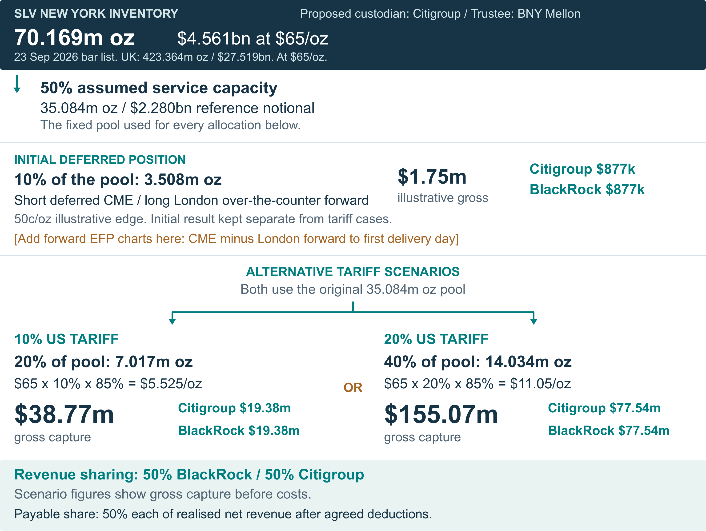
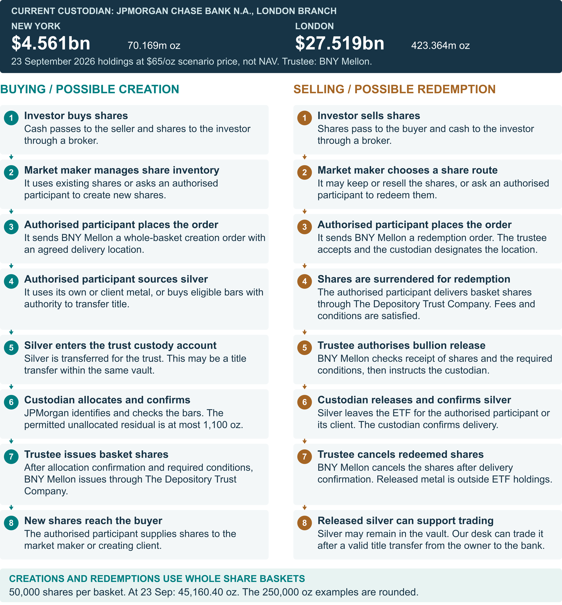
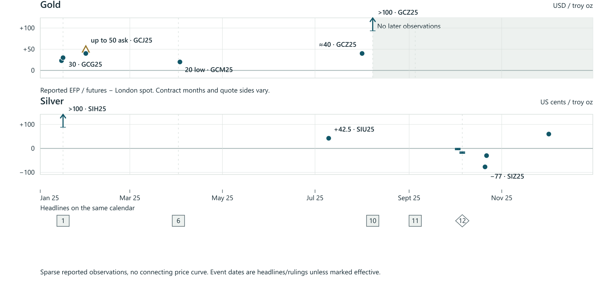

BlackRock precious metals
ETF background and detailed research
Bullion custody and the proposed Citigroup partnership
Product snapshot 23 September 2026
Detailed research through 24 September 2026
Operational resilience strategy added 25 September 2026
The proposed partnership combines bullion custody with location-based execution and shared revenue. This reference document brings together the BlackRock product background, legal and operational foundations, transaction economics, supporting evidence and future growth research behind that proposal.
The product universe covers 20 product/class views representing 18 funds, trusts or ETC series: six Irish ETCs, three Swiss funds, three US bullion trusts, two Canadian funds represented by four currency classes, and four Australian and Japanese feeder ETFs. The feeder wrappers overlap underlying Irish bullion exposure; they are not additional metal pools.
Contents
ETF background and product comparison
Research section guide
01 The first transaction: economics in dollars
02 Three routes to test for positive net value
03 A payment needs a named beneficiary
04 How BlackRock could turn savings into growth
05 A repeatable $10m case requires actual flow
06 Interactive revenue-share example
07 Prove the gain against the best feasible alternative
08 SLV is the documented starting point
09 Custodian appointment, authorised participant flows and desk execution
10 Physical liquidity throughout the transaction
11 Insurance and recovery rights
12 Security and independent assurance
13 Operating and geographical risk limits
14 Settlement: improve the cash leg and measure the result
15 Rules and permissions by jurisdiction
16 India: a demand-backed bullion supply service
17 Bar selection is the first execution decision
18 Real activity, with a disciplined view of scale
19 India economics: build from an executable invoice
20 Worked delivery: ten bank-owned silver bars
21 India delivery needs four separate approvals
22 2025: tariff expectations changed location demand
23 2025: classification shock, then a reversal of flows
24 2026: the legal basis changed again
25 A large quoted spread can contain a large cost
26 China: distinguish International Board from domestic SGE
27 China premium evidence: material, but not a trade ticket
28 One comparable measure for each physical route
29 Forward EFP: match the first delivery day
30 Recovered history: useful points, different conventions
31 The missing leg is an exact-date over-the-counter forward history
32 Future innovation: investor distributions
33 Future growth: locations, products and bar optionality
ETF background and product comparison
20 product / class entries · 18 vehicles · 6 domiciles.
Physical ETFs, bullion trusts and ETCs, including currency hedges and local feeder funds. Mining equities are excluded.
UK/US custody verification
IAU and SLV’s old aggregate delivery thresholds were deleted in 2020. No numerical geographic cap was found in the reviewed filed terms; private limits remain unconfirmed. SLV names England / New York. IAUM’s Canada permission needs documentary reconciliation. Irish ETC US storage permission is not established.
Read the contract and amendment audit ↗
New chapter: bullion location strategy
SLV’s current vault split, the 200 million ounce New York scenario, creation/redemption mechanics, an interactive worked example, historical activity and India feasibility.
Open the proposal and evidence ↗
4. Custody and limits: Named providers reflect retained issuer disclosures at 23 September 2026. No geographic cap identified in reviewed public terms is not confirmation of absent private or operating limits. See the UK/US custody audit above. Canada’s majority rule applies to the legal fund across both currency classes. Feeder rows show local fund custody and underlying ETC bullion custody separately.
1. Size: “Notional” is represented by reported net assets. Values retain their native currencies and dates. Do not add feeder assets to underlying ETC assets.
2. Fees: Annual rates use the issuer’s stated basis. IAUM shows the disclosed waiver. Canadian MERs differ from management fees. Japanese effective fees include underlying management charges.
3. Location: Domicile, exchange and bullion storage are separate. * Storage indicates documented permissions or the majority-location rule, rather than the current vault-by-vault inventory. IAUM Canada remains unreconciled. Details contain full qualifications.
How to read the comparison
Comparable fields, with the underlying structure preserved
1. Net assets as the size measure
“Notional” means reported net assets in this foundation table. It is not trading volume or a derivative notional. Each value retains its source currency and valuation date. Details show exact amounts.
2. Fees retain the issuer’s definition
US sponsor fee, European TER, Canadian MER and local effective management charges are different measures. IAUM has a voluntary fee waiver. Japanese effective fees already include underlying management charges. Brokerage, spreads and exceptional expenses can add to investor costs.
3. Domicile, trading and storage are distinct
Selected markets keep the table readable. The listing register contains all 35 lines extracted from these issuer pages. A trading currency does not imply a currency hedge. Asterisked locations describe permitted vault geography rather than the current split of metal by vault.
4. The rows cannot be added into one global total
Twenty product/class views represent eighteen vehicles. Canada has two classes per bullion fund. Australia and Japan hold Irish ETCs. Adding feeder AUM to underlying AUM counts some bullion twice. Currency conversion would also require an explicit FX date.
5. Evidence remains dated
Research collected 23 September 2026. Most AUM observations are 22 September, Japan is 18 September. Metal dates can differ from AUM dates. Product details link to the issuer and saved legal documents. The existing archive retains historical holdings, news and Citi research for later sections.
6. Holding limits follow the legal wording
Canada requires a majority of each bullion fund’s metal in Canada. Irish platinum/palladium allow Zurich only in limited circumstances. “No cap stated” means no numerical cap in the reviewed location clauses; it does not rule out private operating limits. Location restrictions apply to bullion, not automatically to cash, hedges or all fund NAV.
Three bullion trusts with US listings
The trust is US-domiciled. The custodian is JPMorgan’s London branch. Vault permissions span several jurisdictions.
Product / trading ticker |
Domicile / form |
Selected market / hedge |
Net assets¹ |
Annual fee² |
Bullion location³ / allocation |
|---|---|---|---|---|---|
IAU |
US |
NYSE Arca · USD |
USD 64.557bn |
0.25% |
London / New York / Toronto; England / US / Canada subcustody |
IAUM |
US |
NYSE Arca · USD |
USD 8.084bn |
0.07% |
London / New York; England / US subcustody* |
SLV |
US |
NYSE Arca · USD |
USD 32.437bn |
0.5% |
England / New York* |
Native currency and valuation date retained. Fees follow the issuer’s stated basis. Location permissions and underlying structure are qualified in the detailed product records.
One ETC series for each precious metal
Gold has a 0.12% TER. Silver, platinum and palladium each have a 0.20% TER. Several exchange lines refer to the same security.
Product / trading ticker |
Domicile / form |
Selected market / hedge |
Net assets¹ |
Annual fee² |
Bullion location³ / allocation |
|---|---|---|---|---|---|
SGLN / IGLN / EGLN |
Ireland |
LSE · GBP / USD / EUR |
USD 39.687bn |
0.12% |
London |
SSLN / ISLN |
Ireland |
LSE · GBP / USD |
USD 3.352bn |
0.2% |
London |
SPLT / IPLT |
Ireland |
LSE · GBP / USD |
USD 367.31m |
0.2% |
London / Zurich* |
SPDM / IPDM |
Ireland |
LSE · GBP / USD |
USD 76.41m |
0.2% |
London / Zurich* |
Native currency and valuation date retained. Fees follow the issuer’s stated basis. Location permissions and underlying structure are qualified in the detailed product records.
Two separate currency-hedged gold series
EUR and GBP hedging each carry a 0.25% TER. These ETC series have their own metal entitlements and assets.
Product / trading ticker |
Domicile / form |
Selected market / hedge |
Net assets¹ |
Annual fee² |
Bullion location³ / allocation |
|---|---|---|---|---|---|
IGLD |
Ireland |
Xetra · EUR |
EUR 666.82m |
0.25% |
London |
IGLG |
Ireland |
LSE · GBP |
GBP 986.29m |
0.25% |
London |
Native currency and valuation date retained. Fees follow the issuer’s stated basis. Location permissions and underlying structure are qualified in the detailed product records.
Three Swiss gold subfunds
The Swiss structure uses State Street as custodian and identifies UBS Switzerland as its vaulting agent in Zurich.
Product / trading ticker |
Domicile / form |
Selected market / hedge |
Net assets¹ |
Annual fee² |
Bullion location³ / allocation |
|---|---|---|---|---|---|
CSGOLD |
Switzerland |
SIX · USD |
USD 1.631bn |
0.19% |
Zurich |
CSGLDC |
Switzerland |
SIX · CHF |
CHF 622.04m |
0.22% |
Zurich |
CSGLDE |
Switzerland |
SIX · EUR |
EUR 194.99m |
0.22% |
Zurich |
Native currency and valuation date retained. Fees follow the issuer’s stated basis. Location permissions and underlying structure are qualified in the detailed product records.
Four currency classes in two bullion funds
CGL / CGL.C share one gold fund. SVR / SVR.C share one silver fund. AUM in this table is specific to each currency class.
Product / trading ticker |
Domicile / form |
Selected market / hedge |
Net assets¹ |
Annual fee² |
Bullion location³ / allocation |
|---|---|---|---|---|---|
CGL |
Canada |
TSX · CAD |
CAD 2.177bn |
0.56% |
Mainly Canada* |
CGL.C |
Canada |
TSX · CAD |
CAD 799.66m |
0.55% |
Mainly Canada* |
SVR |
Canada |
TSX · CAD |
CAD 482.79m |
0.66% |
Mainly Canada* |
SVR.C |
Canada |
TSX · CAD |
CAD 142.76m |
0.66% |
Mainly Canada* |
Native currency and valuation date retained. Fees follow the issuer’s stated basis. Location permissions and underlying structure are qualified in the detailed product records.
Local ETFs hold Irish bullion ETC securities
Their AUM overlaps the underlying Irish ETCs. The Japanese figures use the latest saved issuer valuation date, 18 September 2026.
Product / trading ticker |
Domicile / form |
Selected market / hedge |
Net assets¹ |
Annual fee² |
Bullion location³ / allocation |
|---|---|---|---|---|---|
GLDN |
Australia |
ASX · AUD |
AUD 461.28m |
0.18% |
London (underlying) |
314A |
Japan |
Tokyo · JPY |
JPY 80.289bn |
0.22% |
London (underlying) |
568A |
Japan |
Tokyo · JPY |
JPY 691.29m |
0.495% |
London (underlying) |
569A |
Japan |
Tokyo · JPY |
JPY 474.93m |
0.495% |
London / Zurich (underlying)* |
Native currency and valuation date retained. Fees follow the issuer’s stated basis. Location permissions and underlying structure are qualified in the detailed product records.
Detailed product records and sources
Twenty dated product and currency-class records retain exact values, identifiers, custody terms, metal quantities, listing lines and source references. Canadian classes share their legal funds; Australian and Japanese feeders invest in Irish ETC securities.
01 iShares Physical Gold ETC
SGLN / IGLN / EGLN | Ireland | Gold
Field |
Detail |
|---|---|
Legal form |
Secured debt ETC; not a UCITS fund |
Issuer or sponsor |
iShares Physical Metals plc |
Launch or class inception |
08/Apr/2011 |
ISIN / CUSIP |
IE00B4ND3602 |
Reported net assets |
USD 39,687,376,379.00 as of 2026-09-22 |
Asset basis |
Fund / trust / ETC series |
Currency exposure |
Unhedged |
Annual fee |
0.12% — TER |
Custodian |
JPMorgan Chase Bank N.A., London Branch |
Custody evidence date |
2026-09-23 |
Reported metal quantity |
9,154,572.55 troy ounces; 284.74 tonnes; dated 2026-09-23 — Issuer product-page quantity |
Fee definition. Total expense ratio reported by issuer.
Allocation. The series is backed by allocated metal. Metal must be allocated before securities are issued. Transfers can pass through unallocated accounts, with custodian credit exposure during those periods.
Bullion storage. Prospectus location: London vaults of the custodian or subcustodian. This is the contractual location policy, not a reconciliation of today’s bar inventory by vault.
Location holding limits. The Irish base prospectus places all underlying allocated gold and silver in London custodian/subcustodian vaults. It does not specify a numerical limit per individual London vault in the reviewed location clause. This is a location requirement for allocated bullion, not a requirement that every fund asset or hedge be physically in London. The custody-agreement summary on PDF pages 145–146 specifies London for gold/silver subcustody and London or a Swiss fiscal warehouse in Zurich for platinum/palladium. No US location is permitted in these reviewed provisions. The executed series agreements and complete later-document chain remain to be confirmed.
Limit scope. Allocated bullion backing the Irish ETC series
Custody verification. Published base prospectus dated 11 May 2026, including custody summary, reviewed. US storage permission is not established. Executed series custody agreements and a complete post-base supplement/final-terms chain have not been obtained.
Location clause source. 2026 base prospectus: custody, insurance and unallocated accounts — Custody and Insurance, PDF page 56; Custody Agreement summary, PDF pages 145–148 (especially 146(iii))
Recorded listings
Exchange |
Ticker |
Currency |
Listing date |
|---|---|---|---|
Bolsa Mexicana De Valores |
IGLN |
MXN |
23/Nov/2020 |
Borsa Italiana |
SGLN |
EUR |
29/Jan/2026 |
London Stock Exchange |
SGLN |
GBP |
11/Apr/2011 |
London Stock Exchange |
IGLN |
USD |
11/Apr/2011 |
London Stock Exchange |
EGLN |
EUR |
28/Nov/2016 |
Nyse Euronext - Euronext Paris |
SLGN |
EUR |
10/Sept/2026 |
Xetra |
PPFB GY |
EUR |
16/Jul/2021 |
Sources
Issuer product page · Saved source
2026 base prospectus: custody, insurance and unallocated accounts · Saved source
02 iShares Physical Silver ETC
SSLN / ISLN | Ireland | Silver
Field |
Detail |
|---|---|
Legal form |
Secured debt ETC; not a UCITS fund |
Issuer or sponsor |
iShares Physical Metals plc |
Launch or class inception |
08/Apr/2011 |
ISIN / CUSIP |
IE00B4NCWG09 |
Reported net assets |
USD 3,352,107,207.00 as of 2026-09-22 |
Asset basis |
Fund / trust / ETC series |
Currency exposure |
Unhedged |
Annual fee |
0.2% — TER |
Custodian |
JPMorgan Chase Bank N.A., London Branch |
Custody evidence date |
2026-09-23 |
Reported metal quantity |
51,100,185.13 troy ounces; 1,589.41 tonnes; dated 2026-09-23 — Issuer product-page quantity |
Fee definition. Total expense ratio reported by issuer.
Allocation. The series is backed by allocated metal. Metal must be allocated before securities are issued. Transfers can pass through unallocated accounts, with custodian credit exposure during those periods.
Bullion storage. Prospectus location: London vaults of the custodian or subcustodian. This is the contractual location policy, not a reconciliation of today’s bar inventory by vault.
Location holding limits. The Irish base prospectus places all underlying allocated gold and silver in London custodian/subcustodian vaults. It does not specify a numerical limit per individual London vault in the reviewed location clause. This is a location requirement for allocated bullion, not a requirement that every fund asset or hedge be physically in London. The custody-agreement summary on PDF pages 145–146 specifies London for gold/silver subcustody and London or a Swiss fiscal warehouse in Zurich for platinum/palladium. No US location is permitted in these reviewed provisions. The executed series agreements and complete later-document chain remain to be confirmed.
Limit scope. Allocated bullion backing the Irish ETC series
Custody verification. Published base prospectus dated 11 May 2026, including custody summary, reviewed. US storage permission is not established. Executed series custody agreements and a complete post-base supplement/final-terms chain have not been obtained.
Location clause source. 2026 base prospectus: custody, insurance and unallocated accounts — Custody and Insurance, PDF page 56; Custody Agreement summary, PDF pages 145–148 (especially 146(iii))
Recorded listings
Exchange |
Ticker |
Currency |
Listing date |
|---|---|---|---|
Berne Stock Exchange |
ISLN |
EUR |
24/Mar/2026 |
Bolsa Mexicana De Valores |
ISLN |
MXN |
06/Mar/2024 |
London Stock Exchange |
SSLN |
GBP |
11/Apr/2011 |
London Stock Exchange |
ISLN |
USD |
11/Apr/2011 |
Nyse Euronext - Euronext Paris |
SSLN |
EUR |
10/Sept/2026 |
Sources
Issuer product page · Saved source
2026 base prospectus: custody, insurance and unallocated accounts · Saved source
03 iShares Physical Platinum ETC
SPLT / IPLT | Ireland | Platinum
Field |
Detail |
|---|---|
Legal form |
Secured debt ETC; not a UCITS fund |
Issuer or sponsor |
iShares Physical Metals plc |
Launch or class inception |
08/Apr/2011 |
ISIN / CUSIP |
IE00B4LHWP62 |
Reported net assets |
USD 367,312,054.00 as of 2026-09-22 |
Asset basis |
Fund / trust / ETC series |
Currency exposure |
Unhedged |
Annual fee |
0.2% — TER |
Custodian |
JPMorgan Chase Bank N.A., London Branch |
Custody evidence date |
2026-09-23 |
Reported metal quantity |
202,475.08 troy ounces; 6.3 tonnes; dated 2026-09-23 — Issuer product-page quantity |
Fee definition. Total expense ratio reported by issuer.
Allocation. The series is backed by allocated metal. Metal must be allocated before securities are issued. Transfers can pass through unallocated accounts, with custodian credit exposure during those periods.
Bullion storage. Prospectus location: London vaults of the custodian or subcustodian. Limited circumstances also permit platinum and palladium in a subcustodian vault in Zurich. This is the contractual location policy, not a reconciliation of today’s bar inventory by vault.
Location holding limits. The Irish base prospectus places allocated metal in London and permits platinum/palladium in a Zurich subcustodian vault only in limited circumstances. The reviewed location clause does not quantify those circumstances or specify a percentage, ounce or dollar cap for Zurich or a split between cities. The custody-agreement summary on PDF pages 145–146 specifies London for gold/silver subcustody and London or a Swiss fiscal warehouse in Zurich for platinum/palladium. No US location is permitted in these reviewed provisions. The executed series agreements and complete later-document chain remain to be confirmed.
Limit scope. Allocated bullion backing the Irish ETC series
Custody verification. Published base prospectus dated 11 May 2026, including custody summary, reviewed. US storage permission is not established. Executed series custody agreements and a complete post-base supplement/final-terms chain have not been obtained.
Location clause source. 2026 base prospectus: custody, insurance and unallocated accounts — Custody and Insurance, PDF page 56; Custody Agreement summary, PDF pages 145–148 (especially 146(iii))
Recorded listings
Exchange |
Ticker |
Currency |
Listing date |
|---|---|---|---|
Borsa Italiana |
SPLT |
EUR |
25/Mar/2026 |
London Stock Exchange |
SPLT |
GBP |
11/Apr/2011 |
London Stock Exchange |
IPLT |
USD |
11/Apr/2011 |
Sources
Issuer product page · Saved source
2026 base prospectus: custody, insurance and unallocated accounts · Saved source
04 iShares Physical Palladium ETC
SPDM / IPDM | Ireland | Palladium
Field |
Detail |
|---|---|
Legal form |
Secured debt ETC; not a UCITS fund |
Issuer or sponsor |
iShares Physical Metals plc |
Launch or class inception |
08/Apr/2011 |
ISIN / CUSIP |
IE00B4556L06 |
Reported net assets |
USD 76,406,539.00 as of 2026-09-22 |
Asset basis |
Fund / trust / ETC series |
Currency exposure |
Unhedged |
Annual fee |
0.2% — TER |
Custodian |
JPMorgan Chase Bank N.A., London Branch |
Custody evidence date |
2026-09-23 |
Reported metal quantity |
57,986.97 troy ounces; 1.8 tonnes; dated 2026-09-23 — Issuer product-page quantity |
Fee definition. Total expense ratio reported by issuer.
Allocation. The series is backed by allocated metal. Metal must be allocated before securities are issued. Transfers can pass through unallocated accounts, with custodian credit exposure during those periods.
Bullion storage. Prospectus location: London vaults of the custodian or subcustodian. Limited circumstances also permit platinum and palladium in a subcustodian vault in Zurich. This is the contractual location policy, not a reconciliation of today’s bar inventory by vault.
Location holding limits. The Irish base prospectus places allocated metal in London and permits platinum/palladium in a Zurich subcustodian vault only in limited circumstances. The reviewed location clause does not quantify those circumstances or specify a percentage, ounce or dollar cap for Zurich or a split between cities. The custody-agreement summary on PDF pages 145–146 specifies London for gold/silver subcustody and London or a Swiss fiscal warehouse in Zurich for platinum/palladium. No US location is permitted in these reviewed provisions. The executed series agreements and complete later-document chain remain to be confirmed.
Limit scope. Allocated bullion backing the Irish ETC series
Custody verification. Published base prospectus dated 11 May 2026, including custody summary, reviewed. US storage permission is not established. Executed series custody agreements and a complete post-base supplement/final-terms chain have not been obtained.
Location clause source. 2026 base prospectus: custody, insurance and unallocated accounts — Custody and Insurance, PDF page 56; Custody Agreement summary, PDF pages 145–148 (especially 146(iii))
Recorded listings
Exchange |
Ticker |
Currency |
Listing date |
|---|---|---|---|
Berne Stock Exchange |
SPDM |
EUR |
24/Mar/2026 |
London Stock Exchange |
SPDM |
GBP |
11/Apr/2011 |
London Stock Exchange |
IPDM |
USD |
11/Apr/2011 |
Sources
Issuer product page · Saved source
2026 base prospectus: custody, insurance and unallocated accounts · Saved source
05 iShares Physical Gold EUR Hedged ETC
IGLD | Ireland | Gold
Field |
Detail |
|---|---|
Legal form |
Secured debt ETC; not a UCITS fund |
Issuer or sponsor |
iShares Physical Metals plc |
Launch or class inception |
05/Jul/2022 |
ISIN / CUSIP |
IE0009JOT9U1 |
Reported net assets |
EUR 666,824,017.00 as of 2026-09-22 |
Asset basis |
Fund / trust / ETC series |
Currency exposure |
EUR hedged |
Annual fee |
0.25% — TER |
Custodian |
JPMorgan Chase Bank N.A., London Branch |
Custody evidence date |
2026-09-23 |
Reported metal quantity |
176,534.23 troy ounces; 5.49 tonnes; dated 2026-09-22 — Issuer product-page quantity |
Fee definition. Total expense ratio reported by issuer.
Allocation. The series is backed by allocated metal. Metal must be allocated before securities are issued. Transfers can pass through unallocated accounts, with custodian credit exposure during those periods.
Bullion storage. Prospectus location: London vaults of the custodian or subcustodian. This is the contractual location policy, not a reconciliation of today’s bar inventory by vault.
Location holding limits. The Irish base prospectus places all underlying allocated gold and silver in London custodian/subcustodian vaults. It does not specify a numerical limit per individual London vault in the reviewed location clause. This is a location requirement for allocated bullion, not a requirement that every fund asset or hedge be physically in London. The custody-agreement summary on PDF pages 145–146 specifies London for gold/silver subcustody and London or a Swiss fiscal warehouse in Zurich for platinum/palladium. No US location is permitted in these reviewed provisions. The executed series agreements and complete later-document chain remain to be confirmed.
Limit scope. Allocated bullion backing the Irish ETC series
Custody verification. Published base prospectus dated 11 May 2026, including custody summary, reviewed. US storage permission is not established. Executed series custody agreements and a complete post-base supplement/final-terms chain have not been obtained.
Location clause source. 2026 base prospectus: custody, insurance and unallocated accounts — Custody and Insurance, PDF page 56; Custody Agreement summary, PDF pages 145–148 (especially 146(iii))
Recorded listings
Exchange |
Ticker |
Currency |
Listing date |
|---|---|---|---|
Nyse Euronext - Euronext Paris |
IGLD |
EUR |
10/Sept/2026 |
Xetra |
IGLD |
EUR |
07/Jul/2022 |
Sources
Issuer product page · Saved source
2026 base prospectus: custody, insurance and unallocated accounts · Saved source
06 iShares Physical Gold GBP Hedged ETC
IGLG | Ireland | Gold
Field |
Detail |
|---|---|
Legal form |
Secured debt ETC; not a UCITS fund |
Issuer or sponsor |
iShares Physical Metals plc |
Launch or class inception |
05/Jul/2022 |
ISIN / CUSIP |
IE000Q2P3ZQ3 |
Reported net assets |
GBP 986,288,861.00 as of 2026-09-22 |
Asset basis |
Fund / trust / ETC series |
Currency exposure |
GBP hedged |
Annual fee |
0.25% — TER |
Custodian |
JPMorgan Chase Bank N.A., London Branch |
Custody evidence date |
2026-09-23 |
Reported metal quantity |
304,425.87 troy ounces; 9.47 tonnes; dated 2026-09-22 — Issuer product-page quantity |
Fee definition. Total expense ratio reported by issuer.
Allocation. The series is backed by allocated metal. Metal must be allocated before securities are issued. Transfers can pass through unallocated accounts, with custodian credit exposure during those periods.
Bullion storage. Prospectus location: London vaults of the custodian or subcustodian. This is the contractual location policy, not a reconciliation of today’s bar inventory by vault.
Location holding limits. The Irish base prospectus places all underlying allocated gold and silver in London custodian/subcustodian vaults. It does not specify a numerical limit per individual London vault in the reviewed location clause. This is a location requirement for allocated bullion, not a requirement that every fund asset or hedge be physically in London. The custody-agreement summary on PDF pages 145–146 specifies London for gold/silver subcustody and London or a Swiss fiscal warehouse in Zurich for platinum/palladium. No US location is permitted in these reviewed provisions. The executed series agreements and complete later-document chain remain to be confirmed.
Limit scope. Allocated bullion backing the Irish ETC series
Custody verification. Published base prospectus dated 11 May 2026, including custody summary, reviewed. US storage permission is not established. Executed series custody agreements and a complete post-base supplement/final-terms chain have not been obtained.
Location clause source. 2026 base prospectus: custody, insurance and unallocated accounts — Custody and Insurance, PDF page 56; Custody Agreement summary, PDF pages 145–148 (especially 146(iii))
Recorded listings
Exchange |
Ticker |
Currency |
Listing date |
|---|---|---|---|
London Stock Exchange |
IGLG |
GBP |
07/Jul/2022 |
Sources
Issuer product page · Saved source
2026 base prospectus: custody, insurance and unallocated accounts · Saved source
07 iShares Gold ETF (CH)
CSGOLD | Switzerland | Gold
Field |
Detail |
|---|---|
Legal form |
Swiss domiciled contractual investment fund |
Issuer or sponsor |
iShares ETF II (CH) |
Launch or class inception |
05-Oct-2009 |
ISIN / CUSIP |
CH0104136236 |
Reported net assets |
USD 1,630,844,071.53 as of 2026-09-22 |
Asset basis |
Fund / trust / ETC series |
Currency exposure |
Unhedged |
Annual fee |
0.19% — TER |
Custodian |
State Street Bank International GmbH, Munich, Zurich Branch; UBS Switzerland AG is the vaulting agent |
Custody evidence date |
2026-09-23 |
Fee definition. Total expense ratio reported by issuer.
Allocation. March 2026 prospectus describes underlying gold held in allocated form. Detailed dealing-account limits have not been fully classified in this first table.
Bullion storage. Prospectus identifies Zurich vaults and UBS Switzerland AG as the appointed vaulting agent. The custodian may appoint other Swiss banks.
Location holding limits. The prospectus states that all underlying gold held in allocated form will be held by the vaulting agent in Zurich. This constrains the location of allocated gold rather than setting a percentage of the fund’s entire NAV. No per-vault percentage, ounce or dollar limit is stated in the reviewed clause. UBS Switzerland is the named vaulting agent; the custodian may appoint other Swiss banks.
Limit scope. Allocated bullion of the Swiss subfund, not cash or hedge positions.
Current ounces and tonnes are not populated on the saved product page. Historical reports are retained separately.
Location clause source. March 2026 prospectus: custody and vaulting agent — Custody, PDF page 12; Custodian Bank, PDF page 14
Recorded listings
Exchange |
Ticker |
Currency |
Listing date |
|---|---|---|---|
SIX Swiss Exchange |
CSGOLD |
USD |
06-Oct-2009 |
Sources
Issuer product page · Saved source
March 2026 prospectus: custody and vaulting agent · Saved source
08 iShares Gold CHF Hedged ETF (CH)
CSGLDC | Switzerland | Gold
Field |
Detail |
|---|---|
Legal form |
Swiss domiciled contractual investment fund |
Issuer or sponsor |
iShares ETF II (CH) |
Launch or class inception |
05-Oct-2009 |
ISIN / CUSIP |
CH0104136285 |
Reported net assets |
CHF 622,040,961.18 as of 2026-09-22 |
Asset basis |
Fund / trust / ETC series |
Currency exposure |
CHF hedged |
Annual fee |
0.22% — TER |
Custodian |
State Street Bank International GmbH, Munich, Zurich Branch; UBS Switzerland AG is the vaulting agent |
Custody evidence date |
2026-09-23 |
Fee definition. Total expense ratio reported by issuer.
Allocation. March 2026 prospectus describes underlying gold held in allocated form. Detailed dealing-account limits have not been fully classified in this first table.
Bullion storage. Prospectus identifies Zurich vaults and UBS Switzerland AG as the appointed vaulting agent. The custodian may appoint other Swiss banks.
Location holding limits. The prospectus states that all underlying gold held in allocated form will be held by the vaulting agent in Zurich. This constrains the location of allocated gold rather than setting a percentage of the fund’s entire NAV. No per-vault percentage, ounce or dollar limit is stated in the reviewed clause. UBS Switzerland is the named vaulting agent; the custodian may appoint other Swiss banks.
Limit scope. Allocated bullion of the Swiss subfund, not cash or hedge positions.
Current ounces and tonnes are not populated on the saved product page. Historical reports are retained separately.
Location clause source. March 2026 prospectus: custody and vaulting agent — Custody, PDF page 12; Custodian Bank, PDF page 14
Recorded listings
Exchange |
Ticker |
Currency |
Listing date |
|---|---|---|---|
SIX Swiss Exchange |
CSGLDC |
CHF |
06-Oct-2009 |
Sources
Issuer product page · Saved source
March 2026 prospectus: custody and vaulting agent · Saved source
09 iShares Gold EUR Hedged ETF (CH)
CSGLDE | Switzerland | Gold
Field |
Detail |
|---|---|
Legal form |
Swiss domiciled contractual investment fund |
Issuer or sponsor |
iShares ETF II (CH) |
Launch or class inception |
05-Oct-2009 |
ISIN / CUSIP |
CH0104136319 |
Reported net assets |
EUR 194,985,711.84 as of 2026-09-22 |
Asset basis |
Fund / trust / ETC series |
Currency exposure |
EUR hedged |
Annual fee |
0.22% — TER |
Custodian |
State Street Bank International GmbH, Munich, Zurich Branch; UBS Switzerland AG is the vaulting agent |
Custody evidence date |
2026-09-23 |
Fee definition. Total expense ratio reported by issuer.
Allocation. March 2026 prospectus describes underlying gold held in allocated form. Detailed dealing-account limits have not been fully classified in this first table.
Bullion storage. Prospectus identifies Zurich vaults and UBS Switzerland AG as the appointed vaulting agent. The custodian may appoint other Swiss banks.
Location holding limits. The prospectus states that all underlying gold held in allocated form will be held by the vaulting agent in Zurich. This constrains the location of allocated gold rather than setting a percentage of the fund’s entire NAV. No per-vault percentage, ounce or dollar limit is stated in the reviewed clause. UBS Switzerland is the named vaulting agent; the custodian may appoint other Swiss banks.
Limit scope. Allocated bullion of the Swiss subfund, not cash or hedge positions.
Current ounces and tonnes are not populated on the saved product page. Historical reports are retained separately.
Location clause source. March 2026 prospectus: custody and vaulting agent — Custody, PDF page 12; Custodian Bank, PDF page 14
Recorded listings
Exchange |
Ticker |
Currency |
Listing date |
|---|---|---|---|
SIX Swiss Exchange |
CSGLDE |
EUR |
06-Oct-2009 |
Sources
Issuer product page · Saved source
March 2026 prospectus: custody and vaulting agent · Saved source
10 iShares Gold Trust
IAU | US | Gold
Field |
Detail |
|---|---|
Legal form |
New York grantor trust; commodity ETP, not1940Act investment company |
Issuer or sponsor |
iShares Delaware Trust Sponsor LLC (sponsor) |
Launch or class inception |
2005-01-21 |
ISIN / CUSIP |
US4642852044 |
Reported net assets |
USD 64,556,964,832.00 as of 2026-09-22 |
Asset basis |
Fund / trust / ETC series |
Currency exposure |
Unhedged |
Annual fee |
0.25% — Sponsor fee |
Custodian |
JPMorgan Chase Bank N.A., London branch. Trustee: The Bank of New York Mellon. |
Custody evidence date |
2026-09-23 |
Reported metal quantity |
14,913,044.75 troy ounces; 463.85 tonnes; dated 2026-09-22 — Issuer product-page quantity |
Fee definition. Annual sponsor fee. Extraordinary expenses can be additional.
Allocation. Custody arrangements contemplate no gold in unallocated form at each business-day end. Dealing may involve unallocated transfers.
Bullion storage. Clause 1.1 defines the custodian’s own Vault Locations as London, New York or Toronto. Clause 7.4 permits subcustodians in England, the United States or Canada. Other locations require custodian/trustee agreement with sponsor approval. These are filed permissions, not the current inventory split.
Location holding limits. The filed custody agreement, read with the amendments incorporated by the June 2026 Form 10-Q, specifies permitted locations but contains no identified percentage, ounce or dollar ceiling per country, city or vault. Other locations require custodian/trustee agreement and sponsor approval. Best-efforts delivery capacity is not a guarantee of unlimited capacity. Private operating, insurance, risk limits and separate location consents remain unconfirmed.
Limit scope. Bullion held by the US trust; permitted geography is separate from unallocated-account limits.
Capacity limits. The 2016 clause 3.4 allowed refusal of additional delivery above US$50 billion aggregate bullion value. The amendment effective 30 June 2020 deleted that proviso. It was an aggregate delivery threshold, not a geographic allocation cap. No replacement numerical aggregate threshold was identified in the reviewed filed chain.
Custody verification. Public filing chain checked 23 September 2026; latest SEC submissions list the 6 August 2026 Form 10-Q. Private limits and current vault balances are not attested.
Metal quantities on the product page use trade-date activity. Custodian bar lists use accounting data and can differ.
Location clause source. Executed custody agreement, 22 December 2016; clauses 1.1, 3.4 and 7.4–7.5 — Custody agreement clause 7.4 (and clause 1.1 for gold); read with amendments in Details
Recorded listings
Exchange |
Ticker |
Currency |
Listing date |
|---|---|---|---|
NYSE Arca |
IAU |
USD |
See issuer page |
Sources
Issuer product page · Saved source
Prospectus: fees, custody and allocation · Saved source
Executed custody agreement, 22 December 2016; clauses 1.1, 3.4 and 7.4–7.5 · Saved source
June 2026 Form 10-Q, filed 6 August 2026: Item 6 custody exhibit chain · Saved source
30 June 2020 amendment: deletes IAU US$50bn delivery threshold · Saved source
11 iShares Gold Trust Micro
IAUM | US | Gold
Field |
Detail |
|---|---|
Legal form |
New York grantor trust; commodity ETP, not1940Act investment company |
Issuer or sponsor |
iShares Delaware Trust Sponsor LLC (sponsor) |
Launch or class inception |
2021-06-15 |
ISIN / CUSIP |
US46436F1030 |
Reported net assets |
USD 8,083,696,026.00 as of 2026-09-22 |
Asset basis |
Fund / trust / ETC series |
Currency exposure |
Unhedged |
Annual fee |
0.07% — Sponsor fee after waiver |
Custodian |
JPMorgan Chase Bank N.A., London branch. Trustee: The Bank of New York Mellon. |
Custody evidence date |
2026-09-23 |
Reported metal quantity |
1,867,176.13 troy ounces; 58.08 tonnes; dated 2026-09-22 — Issuer product-page quantity |
Fee definition. Sponsor fee is 0.09% before a voluntary waiver to no more than 0.07% through 30 June 2027. The sponsor can change the waiver on at least 30 days’ written notice. Current webpage headline shows the gross fee. The saved prospectus and June 2026 report document the waiver.
Allocation. Custody arrangements contemplate no gold in unallocated form at each business-day end. Dealing may involve unallocated transfers.
Bullion storage. The executed 15 June 2021 agreement defines own Vault Locations as London or New York; clause 7.4 permits subcustodians in England or the United States. The current prospectus (PDF p. 38) and 2025 annual report also mention Canadian subcustody, but the underlying amendment or separate consent has not been located. Canada’s legal basis is unresolved; the England/US permissions are explicit in the filed agreement.
Location holding limits. The filed custody agreement, read with the amendments incorporated by the June 2026 Form 10-Q, specifies permitted locations but contains no identified percentage, ounce or dollar ceiling per country, city or vault. Other locations require custodian/trustee agreement and sponsor approval. Best-efforts delivery capacity is not a guarantee of unlimited capacity. Private operating, insurance, risk limits and separate location consents remain unconfirmed.
Limit scope. Bullion held by the US trust; permitted geography is separate from unallocated-account limits.
Capacity limits. Executed 2021 clause 3.4 has best-efforts capacity wording without a numerical aggregate delivery threshold. A US$100bn threshold appears in an unsigned 2018 prelaunch form, not this executed agreement; it is not treated as a current cap.
Custody verification. Public filing chain checked 23 September 2026; latest SEC submissions list the 6 August 2026 Form 10-Q. Private limits and current vault balances are not attested. Documentary issue: Canadian subcustody in the prospectus/annual summary is not reconciled to the filed agreement; a separate approved consent is possible but unverified.
Metal quantities on the product page use trade-date activity. Custodian bar lists use accounting data and can differ.
Location clause source. Executed custody agreement, 15 June 2021; clauses 1.1, 3.4 and 7.4–7.5 — Custody agreement clause 7.4 (and clause 1.1 for gold); read with amendments in Details
Recorded listings
Exchange |
Ticker |
Currency |
Listing date |
|---|---|---|---|
NYSE Arca |
IAUM |
USD |
See issuer page |
Sources
Issuer product page · Saved source
Prospectus: fees, custody and allocation · Saved source
Executed custody agreement, 15 June 2021; clauses 1.1, 3.4 and 7.4–7.5 · Saved source
June 2026 Form 10-Q, filed 6 August 2026: Item 6 custody exhibit chain · Saved source
12 iShares Silver Trust
SLV | US | Silver
Field |
Detail |
|---|---|
Legal form |
New York grantor trust; commodity ETP, not1940Act investment company |
Issuer or sponsor |
iShares Delaware Trust Sponsor LLC (sponsor) |
Launch or class inception |
2006-04-21 |
ISIN / CUSIP |
US46428Q1094 |
Reported net assets |
USD 32,436,676,600.00 as of 2026-09-22 |
Asset basis |
Fund / trust / ETC series |
Currency exposure |
Unhedged |
Annual fee |
0.5% — Sponsor fee |
Custodian |
JPMorgan Chase Bank N.A., London branch. Trustee: The Bank of New York Mellon. |
Custody evidence date |
2026-09-23 |
Reported metal quantity |
494,346,055 troy ounces; 15,375.88 tonnes; dated 2026-09-22 — Issuer product-page quantity |
Fee definition. Annual sponsor fee. Extraordinary expenses can be additional.
Allocation. Custody arrangements permit no more than 1,100 silver ounces in unallocated form at each business-day end.
Bullion storage. Clause 7.4 permits the custodian’s and subcustodians’ vaults in England or New York. Do not expand New York to the whole United States or England to the whole UK. Other locations require custodian/trustee agreement with sponsor approval. Current vault balances are a separate question.
Location holding limits. The filed custody agreement, read with the amendments incorporated by the June 2026 Form 10-Q, specifies permitted locations but contains no identified percentage, ounce or dollar ceiling per country, city or vault. Other locations require custodian/trustee agreement and sponsor approval. Best-efforts delivery capacity is not a guarantee of unlimited capacity. Private operating, insurance, risk limits and separate location consents remain unconfirmed.
Limit scope. Bullion held by the US trust; permitted geography is separate from unallocated-account limits.
Capacity limits. The 2016 clause 3.4 allowed refusal of additional delivery above 500 million troy ounces in aggregate. The amendment effective 30 June 2020 deleted that proviso. It was not a UK/US split limit. Do not calculate capacity headroom against the obsolete threshold. No replacement numerical aggregate threshold was identified in the reviewed filed chain.
Custody verification. Public filing chain checked 23 September 2026; latest SEC submissions list the 6 August 2026 Form 10-Q. Private limits and current vault balances are not attested.
Metal quantities on the product page use trade-date activity. Custodian bar lists use accounting data and can differ.
Location clause source. Executed custody agreement, 22 December 2016; clauses 1.1, 3.4 and 7.4–7.5 — Custody agreement clause 7.4 (and clause 1.1 for gold); read with amendments in Details
Recorded listings
Exchange |
Ticker |
Currency |
Listing date |
|---|---|---|---|
NYSE Arca |
SLV |
USD |
See issuer page |
Sources
Issuer product page · Saved source
Prospectus: fees, custody and allocation · Saved source
Executed custody agreement, 22 December 2016; clauses 1.1, 3.4 and 7.4–7.5 · Saved source
June 2026 Form 10-Q, filed 6 August 2026: Item 6 custody exhibit chain · Saved source
30 June 2020 amendment: deletes SLV 500 million ounce delivery threshold · Saved source
13 iShares Gold Bullion ETF hedged units
CGL | Canada | Gold
Field |
Detail |
|---|---|
Legal form |
Ontario trust; hedged common units |
Issuer or sponsor |
BlackRock Asset Management Canada Limited (manager and trustee) |
Launch or class inception |
2009-05-28 |
ISIN / CUSIP |
46432D201 |
Reported net assets |
CAD 2,176,948,377.00 as of 2026-09-22 |
Asset basis |
Currency unit class |
Currency exposure |
CAD hedged |
Annual fee |
0.56% — Reported MER |
Custodian |
CIBC Mellon Trust Company (bullion). Royal Canadian Mint (subcustodian). State Street Trust Company Canada (non-bullion). |
Custody evidence date |
2026-09-23 |
Reported metal quantity |
362,276.61 troy ounces; 11.27 tonnes; dated 2026-09-22 — Quantity attributed to this currency class on its issuer page |
Fee definition. Management fee 0.50% per year. Displayed MER includes management fee and applicable expenses/taxes. MER is the issuer’s reported expense measure, not a guaranteed forward total.
Allocation. Investment restrictions require allocated and segregated storage. The prospectus explicitly permits periods of unallocated exposure between bullion purchase and full allocation, and during redemption.
Bullion storage. Prospectus requires the majority in Canada and permits remaining bullion in the US and/or UK. May 2026 amendment says Loomis will replace IDS as subcustodian to the Royal Canadian Mint; operational completion is not established.
Location holding limits. The prospectus requires the majority of each fund’s bullion to be held in Canada; the remainder may be in the US and/or UK. Read ordinarily, majority implies more than 50% in Canada and less than 50% in the US and UK combined; those percentages are an interpretation of the word majority, not numerical caps printed in the clause. No separate country split between the US and UK, or limit per individual vault, is specified in the reviewed storage clause.
Limit scope. Each legal bullion fund, across its hedged and unhedged unit classes; not an independent quota for each class.
This is a unit class of the same legal fund as CGL. Class-level AUM and metal quantities are shown, rather than repeating the whole fund.
Location clause source. Prospectus and amendment: custody, storage and unallocated risk — Investment Strategies, printed p. 13 / PDF page 21
Recorded listings
Exchange |
Ticker |
Currency |
Listing date |
|---|---|---|---|
Toronto Stock Exchange |
CGL |
CAD |
See issuer page |
Sources
Issuer product page · Saved source
Prospectus and amendment: custody, storage and unallocated risk · Saved source
14 iShares Gold Bullion ETF unhedged units
CGL.C | Canada | Gold
Field |
Detail |
|---|---|
Legal form |
Ontario trust; non-hedged common units |
Issuer or sponsor |
BlackRock Asset Management Canada Limited (manager and trustee) |
Launch or class inception |
2011-03-31 |
ISIN / CUSIP |
46432D102 |
Reported net assets |
CAD 799,663,992.00 as of 2026-09-22 |
Asset basis |
Currency unit class |
Currency exposure |
Unhedged |
Annual fee |
0.55% — Reported MER |
Custodian |
CIBC Mellon Trust Company (bullion). Royal Canadian Mint (subcustodian). State Street Trust Company Canada (non-bullion). |
Custody evidence date |
2026-09-23 |
Reported metal quantity |
130,999.68 troy ounces; 4.07 tonnes; dated 2026-09-22 — Quantity attributed to this currency class on its issuer page |
Fee definition. Management fee 0.50% per year. Displayed MER includes management fee and applicable expenses/taxes. MER is the issuer’s reported expense measure, not a guaranteed forward total.
Allocation. Investment restrictions require allocated and segregated storage. The prospectus explicitly permits periods of unallocated exposure between bullion purchase and full allocation, and during redemption.
Bullion storage. Prospectus requires the majority in Canada and permits remaining bullion in the US and/or UK. May 2026 amendment says Loomis will replace IDS as subcustodian to the Royal Canadian Mint; operational completion is not established.
Location holding limits. The prospectus requires the majority of each fund’s bullion to be held in Canada; the remainder may be in the US and/or UK. Read ordinarily, majority implies more than 50% in Canada and less than 50% in the US and UK combined; those percentages are an interpretation of the word majority, not numerical caps printed in the clause. No separate country split between the US and UK, or limit per individual vault, is specified in the reviewed storage clause.
Limit scope. Each legal bullion fund, across its hedged and unhedged unit classes; not an independent quota for each class.
This is a unit class of the same legal fund as CGL. Class-level AUM and metal quantities are shown, rather than repeating the whole fund.
Location clause source. Prospectus and amendment: custody, storage and unallocated risk — Investment Strategies, printed p. 13 / PDF page 21
Recorded listings
Exchange |
Ticker |
Currency |
Listing date |
|---|---|---|---|
Toronto Stock Exchange |
CGL.C |
CAD |
See issuer page |
Sources
Issuer product page · Saved source
Prospectus and amendment: custody, storage and unallocated risk · Saved source
15 iShares Silver Bullion ETF hedged units
SVR | Canada | Silver
Field |
Detail |
|---|---|
Legal form |
Ontario trust; hedged common units |
Issuer or sponsor |
BlackRock Asset Management Canada Limited (manager and trustee) |
Launch or class inception |
2009-07-15 |
ISIN / CUSIP |
46434E108 |
Reported net assets |
CAD 482,785,326.00 as of 2026-09-22 |
Asset basis |
Currency unit class |
Currency exposure |
CAD hedged |
Annual fee |
0.66% — Reported MER |
Custodian |
CIBC Mellon Trust Company (bullion). Royal Canadian Mint (subcustodian). State Street Trust Company Canada (non-bullion). |
Custody evidence date |
2026-09-23 |
Reported metal quantity |
5,300,045.02 troy ounces; 164.85 tonnes; dated 2026-09-22 — Quantity attributed to this currency class on its issuer page |
Fee definition. Management fee 0.60% per year. Displayed MER includes management fee and applicable expenses/taxes. MER is the issuer’s reported expense measure, not a guaranteed forward total.
Allocation. Investment restrictions require allocated and segregated storage. The prospectus explicitly permits periods of unallocated exposure between bullion purchase and full allocation, and during redemption.
Bullion storage. Prospectus requires the majority in Canada and permits remaining bullion in the US and/or UK. May 2026 amendment says Loomis will replace IDS as subcustodian to the Royal Canadian Mint; operational completion is not established.
Location holding limits. The prospectus requires the majority of each fund’s bullion to be held in Canada; the remainder may be in the US and/or UK. Read ordinarily, majority implies more than 50% in Canada and less than 50% in the US and UK combined; those percentages are an interpretation of the word majority, not numerical caps printed in the clause. No separate country split between the US and UK, or limit per individual vault, is specified in the reviewed storage clause.
Limit scope. Each legal bullion fund, across its hedged and unhedged unit classes; not an independent quota for each class.
This is a unit class of the same legal fund as SVR. Class-level AUM and metal quantities are shown, rather than repeating the whole fund.
Location clause source. Prospectus and amendment: custody, storage and unallocated risk — Investment Strategies, printed p. 13 / PDF page 21
Recorded listings
Exchange |
Ticker |
Currency |
Listing date |
|---|---|---|---|
Toronto Stock Exchange |
SVR |
CAD |
See issuer page |
Sources
Issuer product page · Saved source
Prospectus and amendment: custody, storage and unallocated risk · Saved source
16 iShares Silver Bullion ETF unhedged units
SVR.C | Canada | Silver
Field |
Detail |
|---|---|
Legal form |
Ontario trust; non-hedged common units |
Issuer or sponsor |
BlackRock Asset Management Canada Limited (manager and trustee) |
Launch or class inception |
2011-03-04 |
ISIN / CUSIP |
46434E116 |
Reported net assets |
CAD 142,759,158.00 as of 2026-09-22 |
Asset basis |
Currency unit class |
Currency exposure |
Unhedged |
Annual fee |
0.66% — Reported MER |
Custodian |
CIBC Mellon Trust Company (bullion). Royal Canadian Mint (subcustodian). State Street Trust Company Canada (non-bullion). |
Custody evidence date |
2026-09-23 |
Reported metal quantity |
1,543,515.73 troy ounces; 48.01 tonnes; dated 2026-09-22 — Quantity attributed to this currency class on its issuer page |
Fee definition. Management fee 0.60% per year. Displayed MER includes management fee and applicable expenses/taxes. MER is the issuer’s reported expense measure, not a guaranteed forward total.
Allocation. Investment restrictions require allocated and segregated storage. The prospectus explicitly permits periods of unallocated exposure between bullion purchase and full allocation, and during redemption.
Bullion storage. Prospectus requires the majority in Canada and permits remaining bullion in the US and/or UK. May 2026 amendment says Loomis will replace IDS as subcustodian to the Royal Canadian Mint; operational completion is not established.
Location holding limits. The prospectus requires the majority of each fund’s bullion to be held in Canada; the remainder may be in the US and/or UK. Read ordinarily, majority implies more than 50% in Canada and less than 50% in the US and UK combined; those percentages are an interpretation of the word majority, not numerical caps printed in the clause. No separate country split between the US and UK, or limit per individual vault, is specified in the reviewed storage clause.
Limit scope. Each legal bullion fund, across its hedged and unhedged unit classes; not an independent quota for each class.
This is a unit class of the same legal fund as SVR. Class-level AUM and metal quantities are shown, rather than repeating the whole fund.
Location clause source. Prospectus and amendment: custody, storage and unallocated risk — Investment Strategies, printed p. 13 / PDF page 21
Recorded listings
Exchange |
Ticker |
Currency |
Listing date |
|---|---|---|---|
Toronto Stock Exchange |
SVR.C |
CAD |
See issuer page |
Sources
Issuer product page · Saved source
Prospectus and amendment: custody, storage and unallocated risk · Saved source
17 iShares Physical Gold ETF
GLDN | Australia | Gold
Field |
Detail |
|---|---|
Legal form |
Australian managed investment scheme ETF |
Issuer or sponsor |
BlackRock Investment Management (Australia) Limited (responsible entity) |
Launch or class inception |
2023-10-27 |
ISIN / CUSIP |
AU0000292930 |
Reported net assets |
AUD 461,275,190.67 as of 2026-09-22 |
Asset basis |
Feeder ETF net assets |
Currency exposure |
Unhedged |
Annual fee |
0.18% — Management fees and costs |
Custodian |
JPMorgan Chase Bank N.A., Sydney branch (fund). Underlying bullion: JPMorgan, London. |
Custody evidence date |
2026-09-23 |
Underlying security ISIN |
IE00B4ND3602 |
Fee definition. PDS discloses total management fees and costs of 0.18% per year, including 0.00% indirect costs. BlackRock underlying-fund charges are generally rebated or not charged. Do not add the Irish ETC TER again.
Allocation. The ETF holds securities of the Irish physical gold ETC. Allocated bullion backs that ETC, with interim unallocated accounts as described in its prospectus. The local ETF’s portfolio asset is the ETC security.
Bullion storage. Look-through location policy of the Irish gold ETC: London. This is not a separate local bullion pool.
Location holding limits. The Irish base prospectus places all underlying allocated gold and silver in London custodian/subcustodian vaults. It does not specify a numerical limit per individual London vault in the reviewed location clause. This is a location requirement for allocated bullion, not a requirement that every fund asset or hedge be physically in London. This rule applies to the Irish ETC’s underlying bullion. The Australian/Japanese ETF holds ETC securities and does not have a separate local bullion pool. The custody-agreement summary on PDF pages 145–146 specifies London for gold/silver subcustody and London or a Swiss fiscal warehouse in Zurich for platinum/palladium. No US location is permitted in these reviewed provisions. The executed series agreements and complete later-document chain remain to be confirmed.
Limit scope. Underlying Irish ETC allocated bullion
Custody verification. Published base prospectus dated 11 May 2026, including custody summary, reviewed. US storage permission is not established. Executed series custody agreements and a complete post-base supplement/final-terms chain have not been obtained.
Look-through bullion overlaps the Irish ETC. Do not add feeder AUM to the underlying ETC when estimating unique bullion exposure.
Location clause source. Underlying Irish ETC base prospectus — Custody and Insurance, PDF page 56; Custody Agreement summary, PDF pages 145–148 (especially 146(iii))
Recorded listings
Exchange |
Ticker |
Currency |
Listing date |
|---|---|---|---|
ASX |
GLDN |
AUD |
2023-11-01 |
Sources
Issuer product page · Saved source
Product disclosure statement: fees, custody and structure · Saved source
18 iShares Gold ETF
314A | Japan | Gold
Field |
Detail |
|---|---|
Legal form |
Japanese ETF |
Issuer or sponsor |
BlackRock Japan Co., Ltd. |
Launch or class inception |
2025-01-14 |
ISIN / CUSIP |
JP3050630007 |
Reported net assets |
JPY 80,288,564,301.00 as of 2026-09-18 |
Asset basis |
Feeder ETF net assets |
Currency exposure |
Unhedged |
Annual fee |
0.22% — Effective trust fee incl. tax |
Custodian |
Mizuho Trust & Banking Co., Ltd. (trustee). Underlying bullion: JPMorgan, London. |
Custody evidence date |
2026-09-23 |
Underlying security ISIN |
IE00B4ND3602 |
Fee definition. Approximate effective annual management cost including tax and underlying ETC/ETF management cost. The local fee adjusts for underlying charges. Other expenses may apply. Do not add the Irish ETC TER again.
Allocation. The ETF holds securities of the Irish physical gold ETC. Allocated bullion backs that ETC, with interim unallocated accounts as described in its prospectus. The local ETF’s portfolio asset is the ETC security.
Bullion storage. Look-through location policy of the Irish gold ETC: London. This is not a separate local bullion pool.
Location holding limits. The Irish base prospectus places all underlying allocated gold and silver in London custodian/subcustodian vaults. It does not specify a numerical limit per individual London vault in the reviewed location clause. This is a location requirement for allocated bullion, not a requirement that every fund asset or hedge be physically in London. This rule applies to the Irish ETC’s underlying bullion. The Australian/Japanese ETF holds ETC securities and does not have a separate local bullion pool. The custody-agreement summary on PDF pages 145–146 specifies London for gold/silver subcustody and London or a Swiss fiscal warehouse in Zurich for platinum/palladium. No US location is permitted in these reviewed provisions. The executed series agreements and complete later-document chain remain to be confirmed.
Limit scope. Underlying Irish ETC allocated bullion
Custody verification. Published base prospectus dated 11 May 2026, including custody summary, reviewed. US storage permission is not established. Executed series custody agreements and a complete post-base supplement/final-terms chain have not been obtained.
Look-through bullion overlaps the Irish ETC. Do not add feeder AUM to the underlying ETC when estimating unique bullion exposure.
Location clause source. Underlying Irish ETC base prospectus — Custody and Insurance, PDF page 56; Custody Agreement summary, PDF pages 145–148 (especially 146(iii))
Recorded listings
Exchange |
Ticker |
Currency |
Listing date |
|---|---|---|---|
Tokyo Stock Exchange |
314A |
JPY |
2025-01-16 |
Sources
Issuer product page · Saved source
19 iShares Silver ETF
568A | Japan | Silver
Field |
Detail |
|---|---|
Legal form |
Japanese ETF |
Issuer or sponsor |
BlackRock Japan Co., Ltd. |
Launch or class inception |
2026-05-18 |
ISIN / CUSIP |
JP3051470007 |
Reported net assets |
JPY 691,293,275.00 as of 2026-09-18 |
Asset basis |
Feeder ETF net assets |
Currency exposure |
Unhedged |
Annual fee |
0.495% — Effective trust fee incl. tax |
Custodian |
Mizuho Trust & Banking Co., Ltd. (trustee). Underlying bullion: JPMorgan, London. |
Custody evidence date |
2026-09-23 |
Underlying security ISIN |
IE00B4NCWG09 |
Fee definition. Approximate effective annual management cost including tax and underlying ETC/ETF management cost. The local fee adjusts for underlying charges. Other expenses may apply. Do not add the Irish ETC TER again.
Allocation. The ETF holds securities of the Irish physical silver ETC. Allocated bullion backs that ETC, with interim unallocated accounts as described in its prospectus. The local ETF’s portfolio asset is the ETC security.
Bullion storage. Look-through location policy of the Irish silver ETC: London. This is not a separate local bullion pool.
Location holding limits. The Irish base prospectus places all underlying allocated gold and silver in London custodian/subcustodian vaults. It does not specify a numerical limit per individual London vault in the reviewed location clause. This is a location requirement for allocated bullion, not a requirement that every fund asset or hedge be physically in London. This rule applies to the Irish ETC’s underlying bullion. The Australian/Japanese ETF holds ETC securities and does not have a separate local bullion pool. The custody-agreement summary on PDF pages 145–146 specifies London for gold/silver subcustody and London or a Swiss fiscal warehouse in Zurich for platinum/palladium. No US location is permitted in these reviewed provisions. The executed series agreements and complete later-document chain remain to be confirmed.
Limit scope. Underlying Irish ETC allocated bullion
Custody verification. Published base prospectus dated 11 May 2026, including custody summary, reviewed. US storage permission is not established. Executed series custody agreements and a complete post-base supplement/final-terms chain have not been obtained.
Look-through bullion overlaps the Irish ETC. Do not add feeder AUM to the underlying ETC when estimating unique bullion exposure.
Location clause source. Underlying Irish ETC base prospectus — Custody and Insurance, PDF page 56; Custody Agreement summary, PDF pages 145–148 (especially 146(iii))
Recorded listings
Exchange |
Ticker |
Currency |
Listing date |
|---|---|---|---|
Tokyo Stock Exchange |
568A |
JPY |
2026-05-20 |
Sources
Issuer product page · Saved source
20 iShares Platinum ETF
569A | Japan | Platinum
Field |
Detail |
|---|---|
Legal form |
Japanese ETF |
Issuer or sponsor |
BlackRock Japan Co., Ltd. |
Launch or class inception |
2026-05-18 |
ISIN / CUSIP |
JP3051480006 |
Reported net assets |
JPY 474,931,743.00 as of 2026-09-18 |
Asset basis |
Feeder ETF net assets |
Currency exposure |
Unhedged |
Annual fee |
0.495% — Effective trust fee incl. tax |
Custodian |
Mizuho Trust & Banking Co., Ltd. (trustee). Underlying bullion: JPMorgan, London. |
Custody evidence date |
2026-09-23 |
Underlying security ISIN |
IE00B4LHWP62 |
Fee definition. Approximate effective annual management cost including tax and underlying ETC/ETF management cost. The local fee adjusts for underlying charges. Other expenses may apply. Do not add the Irish ETC TER again.
Allocation. The ETF holds securities of the Irish physical platinum ETC. Allocated bullion backs that ETC, with interim unallocated accounts as described in its prospectus. The local ETF’s portfolio asset is the ETC security.
Bullion storage. Look-through location policy of the Irish platinum ETC: London, with Zurich permitted in limited circumstances for platinum. This is not a separate local bullion pool.
Location holding limits. The Irish base prospectus places allocated metal in London and permits platinum/palladium in a Zurich subcustodian vault only in limited circumstances. The reviewed location clause does not quantify those circumstances or specify a percentage, ounce or dollar cap for Zurich or a split between cities. This rule applies to the Irish ETC’s underlying bullion. The Australian/Japanese ETF holds ETC securities and does not have a separate local bullion pool. The custody-agreement summary on PDF pages 145–146 specifies London for gold/silver subcustody and London or a Swiss fiscal warehouse in Zurich for platinum/palladium. No US location is permitted in these reviewed provisions. The executed series agreements and complete later-document chain remain to be confirmed.
Limit scope. Underlying Irish ETC allocated bullion
Custody verification. Published base prospectus dated 11 May 2026, including custody summary, reviewed. US storage permission is not established. Executed series custody agreements and a complete post-base supplement/final-terms chain have not been obtained.
Look-through bullion overlaps the Irish ETC. Do not add feeder AUM to the underlying ETC when estimating unique bullion exposure.
Location clause source. Underlying Irish ETC base prospectus — Custody and Insurance, PDF page 56; Custody Agreement summary, PDF pages 145–148 (especially 146(iii))
Recorded listings
Exchange |
Ticker |
Currency |
Listing date |
|---|---|---|---|
Tokyo Stock Exchange |
569A |
JPY |
2026-05-20 |
Sources
Issuer product page · Saved source
Detailed research behind the pitch
Transaction economics, custody mechanics, operating controls, market evidence and proposed growth opportunities. Section numbers retain the original research cross-references.
01 The first transaction: economics in dollars
Separate earlier illustration: the 4.5moz physical-substitution model uses different costs and is not the current 250,000 oz CME/over-the-counter custody-flow example. See Appendix 9 for the current model.
Exchange 4.5 million New York ounces for equal eligible London ounces through an approved bank-principal arrangement.
Illustrative cash construction |
USD |
|---|---|
New York value: 4.5m oz × $60.50 |
$272.250m |
London replacement: 4.5m oz × $60.00 |
−$270.000m |
Realised location spread |
$2.250m |
Incremental execution costs: 4.5m oz × $0.12 |
−$0.540m |
Net before sharing |
$1.710m |
Proposed BlackRock 50% / Citigroup 50% |
$0.855m / $0.855m |
Assumed 12¢/oz = 4¢ handling/transport + 1¢ insurance/assay/vault + 2¢ execution/hedge + 5¢ incremental funding. No component is a quote. Price, grade, customs status, value date and executable size must match.
Evidence and assumptions
Full cash and metal ledger
Legal structure review
The table prices a principal substitution; it does not instruct the fund to run cash sales or hedges. Tax classification and any cash receipt remain unresolved.
02 Three routes to test for positive net value
Separate earlier illustration: the 4.5moz physical-substitution model uses different costs and is not the current 250,000 oz CME/over-the-counter custody-flow example. See Appendix 9 for the current model.
Route |
Executable comparison |
Inventory consequence |
|---|---|---|
New York premium |
New York bid minus London replacement offer, after all costs |
Release New York stock; rebuild it at an actual future cost. |
New York discount |
London bid minus New York replacement offer, after all costs |
Increase New York stock; requires eligible London stock and approval. |
India supply outlet |
Eligible IIBX buyer price minus the complete bank-owned supply cost |
Sell eligible bank stock through the approved supplier/buyer route. |
Each route needs its own buyer, quantity, title, tax and settlement terms. Revenue is earned only when the complete transaction is executable.
Reverse-direction costs need not be symmetric. IIBX is an additional supply outlet to investigate; its prices are not directly comparable with the hypothetical $60 London model.
Evidence and assumptions
Worked forward and reverse cases
IIBX research
03 A payment needs a named beneficiary
Route |
Economic recipient |
Potential use |
|---|---|---|
Approved fund credit |
Investors, through the fund |
Compensation for the agreed transaction; distribution/accounting route requires approval. |
Custody supplier saving |
BlackRock sponsor, which pays custody |
Improve sponsor margin or fund a documented investor-fee reduction. |
Sponsor-fee relief |
Investors retain more value in the fund |
Improve fee competitiveness and tracking, subject to valid waiver/accrual mechanics. |
Bank/authorised participant service margin |
Desk or bank entity |
Earn from execution, committed replacement stock and settlement support. |
Allocate each saved dollar once: retain it at the sponsor or pass it to investors through a documented mechanism.
SLV cash receipts can restrict new creations until a distribution record date passes. A fee or rebate label does not remove the underlying mandate, tax or conflicts analysis.
Revenue-share assumptions and uses of the benefit
BlackRock receives half of eligible net trading revenue and can choose how to use that income.
01
Improve sponsor economics
Receive 50% of eligible realised net trading revenue under the proposed agreement.
02
Offer investors better value
Pass through savings through an approved fee-reduction mechanism.
03
Strengthen execution
Improve delivery availability and settlement service, supporting asset retention and growth.
Share net trading revenue equally: 50% BlackRock / 50% Citigroup. Count each dollar once.
These are alternative uses and potential commercial benefits. Savings, inflows and additional revenue must be demonstrated.
Fee, AUM and revenue sensitivities ↗
Proposed trading revenue share: 50% BlackRock / 50% Citigroup after agreed costs. Custody fees are separate. BlackRock is the proposed recipient; any investor benefit needs its own mechanism.
Evidence and assumptions
SLV Trust §§2.3(c),4.11,5.3(g)
Payment structure alternatives
04 How BlackRock could turn savings into growth
Commercial lever |
Worked scale |
Required proof |
|---|---|---|
Investor fee relief |
$10m/year is about 3.08bps on saved SLV AUM of $32.437bn |
Recurring net saving, valid fee mechanics and who funds it. |
Retain sponsor supplier savings |
$10m lower supplier cost can improve pre-tax margin by $10m, all else equal |
Actual private custody costs and no offsetting programme costs. |
Win or retain assets |
$2bn additional AUM × 0.50% fee = $10m annual gross fee run-rate |
Actual attributable inflows/retention; provider costs and rebates still apply. |
Improve authorised participant execution and service |
Better location availability and fewer funding/settlement failures |
Measured service improvement; no assumed conversion into fund inflows. |
These are independent sensitivities. Fee relief initially reduces sponsor fee revenue; it does not guarantee enough additional assets to offset that reduction. Saved AUM is dated 22 September 2026.
Evidence and assumptions
AUM and fee evidence
Commercial calculations
05 A repeatable $10m case requires actual flow
Separate earlier illustration: the 4.5moz physical-substitution model uses different costs and is not the current 250,000 oz CME/over-the-counter custody-flow example. See Appendix 9 for the current model.
At the example inputs, Citigroup earns 19¢ per executed ounce at the proposed 50:50 split before fixed costs, setup costs, tax and losses.
Annual desk hurdle |
Required executed ounces |
|---|---|
$10m before those additional costs |
52.632m oz |
Also cover $1m fixed costs and recover 10¢/oz setup on 129.831m additional ounces over three years |
80.672m oz |
Scale reference: 2025 SLV redeemed ounces |
306.800m oz across all authorised participants and locations |
52.632m ounces is 17.2% of that reported redemption leg. This does not establish accessible, executable or uniquely available inventory.
A 20moz working allocation would need replenishment or profitable reverse flows. Independent substitutions have a different opportunity set. $10m annual desk contribution is a modelling interpretation; the target horizon remains an assumption; Citigroup is the proposed bank recipient.
Evidence and assumptions
Annual model, formula and sensitivities
06 Interactive revenue-share example
Separate earlier illustration: the 4.5moz physical-substitution model uses different costs and is not the current 250,000 oz CME/over-the-counter custody-flow example. See Appendix 9 for the current model.
Editable model input |
Default |
|---|---|
Executed silver |
4.5 million troy ounces |
Physical premium |
$0.50 per oz |
Variable cost |
$0.12 per oz |
BlackRock share of positive net |
50% |
Annual desk fixed costs / loss budget |
$0 million |
Annual Citigroup target |
$10 million |
Calculated result |
Default value |
|---|---|
Transaction net before sharing |
$1,710,000 |
BlackRock allocation |
$855,000 |
Citigroup allocation |
$855,000 |
Desk unit margin |
$0.19 per oz |
Annual executed ounces for desk target |
52,631,578.947 oz (52.632 million oz) |
New York ounces after exchange |
195,500,000 oz (195.5 million oz) |
Calculation formulas
Q = executed million ounces × 1,000,000.
Transaction net N = Q × (physical premium − variable cost).
BlackRock allocation = max(0, N) × BlackRock share / 100.
Citigroup allocation = max(0, N) − BlackRock allocation.
Desk unit margin = (physical premium − variable cost) × (1 − BlackRock share / 100).
Annual executed ounces = (annual target + annual fixed costs in $m) × 1,000,000 / positive desk unit margin.
New York ounces remaining = 200,000,000 − Q.
Inputs and formulas are editable in Word. The linked HTML retains the interactive calculator. A nonpositive desk unit margin gives no positive annual hurdle. Negative transaction economics remain visible as a loss; no upside is shared, and loss ownership requires agreement. Quantity is restricted to 0–200 million ounces, costs and targets are nonnegative, and the share is 0–100%. Executed quantity above 20 million ounces consumes the illustrative 180 million ounce reserve.
Illustrative allocations to BlackRock and Citigroup; proposed split is 50:50. Additional costs, payment terms and any investor benefit require separate validation. Annual ounces are a reverse-solved hurdle, not a flow forecast.
Direction: New York metal released, equal London metal replaces it. Start at the proposed 200moz New York target. No initial build cost or investor tax is entered here. Loss ownership requires agreement; negative results remain visible.
Evidence and assumptions
All editable values are assumptions. Initial stock positioning is not free. A client allocation is neither an approved cash distribution nor automatically an economic gain versus the asset surrendered.
Full annual/setup calculator
07 Prove the gain against the best feasible alternative
Separate earlier illustration: the 4.5moz physical-substitution model uses different costs and is not the current 250,000 oz CME/over-the-counter custody-flow example. See Appendix 9 for the current model.
The trust owns bars that may already carry location value. The service must improve the outcome available to investors.
Evaluation |
What must be measured |
|---|---|
Before the exchange |
Executable value at size, rights attached to the bars and cost of a feasible alternative. |
After the exchange |
Replacement metal value + net permitted client compensation − only additional fund-borne costs and tax not already included. |
Value retained for stress |
The opportunity cost of releasing scarce New York inventory and the cost of rebuilding it. |
Desk remuneration |
Compensation for actual price, execution, funding and settlement commitments. |
The revised example allocates $0.855m each to BlackRock and Citigroup after $0.540m variable costs. BlackRock is a separate recipient: its payment is not automatically a credit to the fund. Fair consideration for the owner of the released silver must be assessed separately.
No reviewed clause assigns the fund every downstream bank trading profit. Fair consideration and contractual entitlements need explicit agreement; benchmark NAV alone does not resolve either.
Evidence and assumptions
Investor-value and legal analysis
Commercial counterfactual
08 SLV is the documented starting point
New York inventory |
Fine troy ounces |
Share of unchanged trust total |
|---|---|---|
23 September weightlist |
70.169m |
14.22% |
User’s proposed target |
200.000m |
40.52% |
Additional positioning |
129.831m |
About 4,038 tonnes to relocate or substitute |
Use an initial approved transaction to establish price, controls and capacity before committing to the full target.
Initial cost on the additional ounces: 5¢ = $6.492m; 10¢ = $12.983m; 25¢ = $32.458m. These are sensitivities, not logistics quotes. England/New York is the SLV perimeter; no numerical geographic cap found is not unlimited capacity.
Evidence and assumptions
Retained JPMorgan inventory snapshot
Location authority and limits
09 Custodian appointment, authorised participant flows and desk execution
Deployment and tariff scenarios
Proposed custodian: Citigroup / Trustee: BNY Mellon
{kind=link}

Fixed capacity and alternative tariff cases
Each allocation uses the original 35,084,496.7 oz pool. At $65 spot, the 10% and 20% tariff outcomes are separate scenarios, not cumulative stages.
Scenario / calculation |
Illustrative result |
|---|---|
Starting New York stock |
70,168,993.400 fine oz x $65 spot assumption = $4,560,984,571.00; inventory dated 23 Sep 2026 |
Fixed service capacity |
50% x 70,168,993.400 = 35,084,496.700 oz; $2,280,492,285.50 reference notional |
Separate initial position |
10% x 35,084,496.700 = 3,508,449.670 oz. Gross $1,754,224.84 at illustrative $0.50/oz; Citigroup $877,112.42, BlackRock $877,112.42 before costs. Excluded from tariff headlines. |
Alternative A: 10% tariff |
20% x 35,084,496.700 = 7,016,899.340 oz. $65 x 10% x 85% = $5.525/oz. Gross $38,768,368.85; Citigroup $19,384,184.43, BlackRock $19,384,184.43 before costs. |
Alternative B: 20% tariff |
40% x 35,084,496.700 = 14,033,798.680 oz. $65 x 20% x 85% = $11.05/oz. Gross $155,073,475.41; Citigroup $77,536,737.71, BlackRock $77,536,737.71 before costs. |
Comparison rule |
Alternative outcomes: do not sum quantities or revenues. Neither percentage uses a balance reduced by the initial or another tariff allocation. The 20% tariff is a total rate, not an additional 20 points. |
Capacity if initial is also committed |
Case A only: 35,084,496.700 - 3,508,449.670 - 7,016,899.340 = 24,559,147.690 oz remaining. Case B only: 35,084,496.700 - 3,508,449.670 - 14,033,798.680 = 17,542,248.350 oz remaining. |
Case A specified-cost sensitivity |
One month and one potential 8c/oz shipment: shipping $561,351.95; initial margin funding $38,008.20. Contribution after only these costs: $38,169,008.70; Citigroup $19,084,504.35, BlackRock $19,084,504.35. Excludes initial-position P&L and unpriced costs. |
Case B specified-cost sensitivity |
One month and one potential 8c/oz shipment: shipping $1,122,703.89; initial margin funding $76,016.41. Contribution after only these costs: $153,874,755.11; Citigroup $76,937,377.56, BlackRock $76,937,377.56. Excludes initial-position P&L and unpriced costs. |
The initial 10% trade is separate. Its $1.754m gross is not added to tariff headlines. A combined portfolio result needs its actual realised or marked outcome and costs. The detailed 250,000 oz examples below retain their separate $60 over-the-counter-forward reference; $65 here is the corrected spot input for inventory notionals and tariff calculations, not a verified forward quote.
The 50% capacity is a sizing assumption, not evidence of available bank inventory. Operational bar selection remains subject to instructions. Transactions need valid owner/agent authority, applicable approvals, replacement backing and fair consideration. Fund bars cannot be pledged for desk margin. Current stock is not gross authorised participant turnover.
Capture assumptions
At a constant $65 spot reference, assume the US basis fully prices the hypothetical tariff: $6.50/oz at 10%, $13/oz at 20%. Capture 85%: $5.525 and $11.05. The remaining 15% is uncaptured basis, not an all-inclusive cost reserve. No $0.50 is added to tariff edges. Origin, customs status, exemptions, entry date and taxable value need transaction-specific analysis. Neither tariff incidence nor the price response is established.
Fair compensation for the owner's US location value may absorb part or all of the spread. Newly imported replacement may incur duty. Capture requires a lawful, priced route that avoids paying the same tariff premium twice. Custody alone supplies neither these economics nor guaranteed inventory access.
Initial position and repricing
If the separate initial 3,508,449.670 oz short-CME/long-London remains open from $0.50, a $6.50 basis gives $-21,050,698.02 mark-to-market; the alternative $13 basis gives $-43,855,620.88. These are alternative unoffset sensitivities, excluded from tariff gross capture. Any offset must come from genuinely bank-owned US location value or a valid hedge, not an uncontracted claim on fund bars.
Revenue available for sharing
Shareable proceeds require eligible realised capture less execution/delivery, initial margin/variation margin and physical funding, lease, storage/insurance, duties/taxes, title/location consideration and agreed losses. The proposed split is 50% BlackRock / 50% Citigroup of positive realised net revenue after agreed deductions. The amounts beside gross headlines show the illustrative gross allocation to each party, not final earned revenue. BlackRock is the proposed recipient, not the ETF or its shareholders; payment authority and the contracting entities still require agreement. Cost sensitivities price only an 8c shipment and one month of initial margin funding, using 10% initial margin at $65 and 1% p.a.; they do not resolve all deductions.
Forward EFP chart insertion
Bring in matched charts: CME contract price(t) minus independent over-the-counter London outright forward(t) for its first delivery day. Retain timestamps, bid/ask, contract, value date and size. $65 spot does not supply the forward quote. Existing sparse observations cannot replace the missing matched history.
Bar choice and daily reporting
SLV and IAU custody clause 4.2(b) permits withdrawal-bar selection. Clause 4.1 requires trustee instructions; clause 2.7 governs approved substitutions. Creation location requires coordination. Filed procedures operate per authorised participant order, and clause 2.5(a) requires separately identified daily transactions. Current private batching/net settlement remains unverified. Use gross settled authorised participant flow by location, not exchange volume or net daily holdings.
Full current creation/redemption overview, retained for reference
How buying and selling reaches the vault

Illustrative market-maker route. Primary orders are optional and roles may sit within one firm. Released silver is outside the ETF but requires a valid transfer of title before our bank may trade it. Current private operating cutoffs remain unverified.
Creation and redemption steps
Creation
1. Investor buys shares
Cash passes to the seller and shares to the investor through a broker.
2. Market maker manages share inventory
It uses existing shares or asks an authorised participant to create new shares.
3. Authorised participant places the order
It sends BNY Mellon a whole-basket creation order with an agreed delivery location.
4. Authorised participant sources silver
It uses its own or client metal, or buys eligible bars with authority to transfer title.
5. Silver enters the trust custody account
Silver is transferred for the trust. This may be a title transfer within the same vault.
6. Custodian allocates and confirms
JPMorgan identifies and checks the bars. The permitted unallocated residual is at most 1,100 oz.
7. Trustee issues basket shares
After allocation confirmation and required conditions, BNY Mellon issues through The Depository Trust Company.
8. New shares reach the buyer
The authorised participant supplies shares to the market maker or creating client.
Redemption
1. Investor sells shares
Shares pass to the buyer and cash to the investor through a broker.
2. Market maker chooses a share route
It may keep or resell the shares, or ask an authorised participant to redeem them.
3. Authorised participant places the order
It sends BNY Mellon a redemption order. The trustee accepts and the custodian designates the location.
4. Shares are surrendered for redemption
The authorised participant delivers basket shares through The Depository Trust Company. Fees and conditions are satisfied.
5. Trustee authorises bullion release
BNY Mellon checks receipt of shares and the required conditions, then instructs the custodian.
6. Custodian releases and confirms silver
Silver leaves the ETF for the authorised participant or its client. The custodian confirms delivery.
7. Trustee cancels redeemed shares
BNY Mellon cancels the shares after delivery confirmation. Released metal is outside ETF holdings.
8. Released silver can support trading
Silver may remain in the vault. Our desk can trade it after a valid title transfer from the owner to the bank.
Illustrative dependency chains; secondary settlement and primary processing may overlap. Current private timetable has not been obtained.
Trust agreement sections 2.3, 2.4 and 2.6; legal and source qualifications in CUSTODY-PITCH.md.
Current section 2 model: proposed successor custody plus separate bank-principal CME/over-the-counter execution.
Input / output |
250,000 oz illustration |
|---|---|
Reference price / notional |
$60/oz / $15,000,000 |
CME premium / discount |
+$0.50 or -$0.50 versus a simultaneously quoted London outright forward to the selected CME first delivery day |
Desk position at premium |
Short 50 standard SI futures; long 250,000 oz over-the-counter London forward |
Desk position at discount |
Long 50 standard SI futures; short 250,000 oz over-the-counter London forward |
Initial margin / monthly funding |
$1,500,000 assumed cash initial margin; $1,250/month at 1% p.a. |
One-time shipment allowance |
$20,000, if physical routing is required; 8¢/oz is a user assumption |
Gross full spread capture |
$125,000, conditional on delivery economics or a complete 50¢ favourable spread move |
One-month contribution |
$103,750 before unpriced costs, losses and revenue share |
Cash initial margin = 250,000 oz × $60 × 10% = $1.5m. Funding = $1.5m × 1% p.a. ÷ 12 = $1,250/month (0.5¢/oz). Shipment = 250,000 oz × 8¢ = $20,000 once, if required. initial margin itself is not an expense; actual exchange/broker requirements may differ.
Holding period |
Initial margin funding |
Shipment + initial margin funding |
Contribution* |
Citigroup 50%* |
BlackRock 50%* |
|---|---|---|---|---|---|
1 month |
$1,250 |
$21,250 |
$103,750 |
$51,875 |
$51,875 |
3 months |
$3,750 |
$23,750 |
$101,250 |
$50,625 |
$50,625 |
6 months |
$7,500 |
$27,500 |
$97,500 |
$48,750 |
$48,750 |
Assumes the full 50¢ spread is captured. Contributions and 50:50 allocations are after specified costs, before further deductions. The proposed payable share is 50% of positive realised net revenue for each party. Variation-margin liquidity, over-the-counter collateral, metal funding/lease, storage, insurance, fees, tax and residual basis are not priced. Shipping is a placeholder in each direction, not a quote.
Operational point |
Required interpretation |
|---|---|
Secondary vs primary |
An investor buy/sell alone does not allocate/deallocate metal. authorised participants place actual primary orders in whole share baskets. |
Exact basket size |
23 Sep basket silver amount: 45,160.40 oz per 50,000 shares. 250,000 oz is about 5.5358 baskets; six baskets are 300,000 shares / 270,962.4 oz. Actual orders and hedges need rounding/residual management. |
Existing notional |
23 Sep bar list: New York 70,168,993.4 fine oz ($4,560,984,571 at $65); London 423,364,332 fine oz ($27,518,681,580 at $65). Total $32,079,666,151; scenario notional, not NAV. The separate 250,000 oz trading example uses the stated $60 forward reference. |
Premium location flows |
Redeem 250,000 oz in New York and create with 250,000 oz in London. Fund holdings change by -250,000 oz New York / +250,000 oz London; total ounces are unchanged. Released silver is outside the ETF. The example assumes standing authorised arrangements give the bank valid title to released metal for trading. The location shift alone does not generate or finance a trading profit. |
Cross-location discount flows |
Redemption -250k London and creation +250k New York raise US holdings and reduce UK holdings equally. Allocation geography is subject to accepted instructions and fair pricing. |
Standing access assumption |
The worked examples assume that released metal becomes available to the desk under standing authorised terms, including valid transfer of title to the bank. This removes the need to show a fresh purchase-agreement step in each example. It is a proposed commercial assumption, not a right created automatically by custody or redemption. The current trust delivers to or to the order of the authorised participant, which may act for a client. Creation still requires authority to transfer good, unencumbered title. |
Warranting and delivery |
For the premium route, place released, eligible, bank-owned New York bars on warrant through a clearing member at a CME-approved facility. The warrant is then available for delivery of the short futures. Eligibility, brand, weight, depository and registration must be confirmed; New York location alone does not ensure eligibility. For the discount route, receive New York warrants through the long futures, cancel the warrants and arrange valid ETF allocation; deliver released London metal into the over-the-counter forward. Warrant receipt, cancellation and allocation timing must be reconciled. |
Issuance and cancellation sequence |
Filed Schedule 1 sections 2.01(g)-(h) require allocation/eligibility confirmation before issuance, with a limited 1,100 oz unallocated allowance. Section 3.01(e) puts custodian delivery confirmation before trustee cancellation. Actual private operating cutoffs remain unverified. |
Realisation |
Entering a futures/forward spread is not an immediate $125,000 cash receipt. Delivery, an agreed EFRP/location exchange or closing both legs must realise it. An early close depends on the remaining spread. |
Premium unwind formula |
Q × (entry CME-minus-over-the-counter spread - exit spread), before costs. Entry +50¢, exit +20¢ produces $75,000 gross; exit +70¢ loses $50,000 gross. |
Discount unwind formula |
Q × (exit CME-minus-over-the-counter spread - entry spread), before costs. Entry -50¢, exit -20¢ produces $75,000 gross; exit -70¢ loses $50,000 gross. |
Delivery and collateral |
CME delivery may occur across the delivery month; matching over-the-counter first-delivery-day value does not assure delivery that day. Margin and cash/metal funding bridge timing mismatches. Fund bars do not fund desk margin. |
Revenue share |
Proposed 50% BlackRock / 50% Citigroup. The $103,750 contribution after specified one-month costs allocates $51,875 to each before further deductions. Make a cash payment to BlackRock for 50% of positive realised net trading revenue after agreed costs; Citigroup retains the other 50%. Reconcile metals, cash and all costs for disclosure to BlackRock. BlackRock is the proposed recipient, not automatically the ETF. |
If initial margin were 10% of each scenario’s CME price instead of the common $60 reference, it would be $1,512,500 / $1,487,500 and monthly funding $1,260.42 / $1,239.58. The main diagrams use the user-confirmed common $60 assumption for comparability.
Earlier stand-alone substitution route, retained for reference
Step |
Fund / custodian |
Bank / execution desk |
|---|---|---|
1 · Approve and quote |
Trustee approves eligible substitution; sponsor consulted |
Commit replacement metal, net consideration, size and expiry. |
2 · Prepare settlement |
Identify both bar lists, title conditions and approved accounts |
Fund replacement stock and arrange any separate hedge. |
3 · Exchange title |
Receive allocated replacement before or legally with release |
Acquire released bars under the agreed principal contract. |
4 · Complete and reconcile |
Confirm ounces, permitted payment and investor treatment |
Own subsequent resale, transport and hedge obligations. |
5 · Review exceptions |
Independent reconciliation and custody oversight |
Resolve failed legs and costs under the agreed loss rules. |
An investor share purchase does not automatically create metal flow. authorised participant redemptions follow designated delivery rules; they do not grant an unrestricted choice of the highest-premium location.
Custodian transition and operating controls
Take over safekeeping and primary-market servicing under a documented transition, while the desk trades on the bank’s own balance sheet.
1. Appoint and transfer. Agree trustee/sponsor approval, custody contract, vault network, insurance and bar-by-bar reconciliation.
2. Service authorised participant orders. Confirm delivery locations, allocation/release controls, current settlement procedures and independent custody records.
3. Separate desk execution. Agree principal transactions, information controls, funding, margin, fair consideration and revenue allocation.
Preserve fund backing and redemption capacity throughout the transition. The 200moz New York ambition is a later inventory decision.
Existing New York holdings are about 70.17moz at 23 September 2026. A new custody appointment does not itself confer authorised participant status, ownership of redeemed metal or permission to pledge trust assets for desk margin.
Appointment and implementation workstreams
Seek a joint review of our bank as successor custodian, supported by a costed transition and a separately governed execution service.
CUSTODY
Price the mandate
Quote safekeeping and servicing fees, vault capacity, insurance and transition costs.
EXECUTION
Validate the economics
Firm CME and over-the-counter quotes, agreed authorised participant flow, all funding and delivery costs, and the proposed 50:50 BlackRock / Citigroup payment terms.
TRANSITION
Prove the operation
Reconcile bars, test allocations and releases, and agree exceptions, oversight and a controlled migration.
The ask: a custody appointment evaluation with BlackRock, the trustee and relevant authorised participants before any transfer or trading commitment.
The 200moz target and any $10m annual desk case remain scale hypotheses, not forecast income. Any shared proceeds must follow approved contracts and tax/accounting treatment.
Settlement timing: London replacement for an immediate creation must already be available from inventory or a separate physical supply arrangement; a future-dated London forward does not satisfy today’s allocation. The same applies to New York supply before the long CME contract delivers. The cash and metal ledger must include interim inventory, settlement amounts, owner consideration and all costs before determining realised trading revenue.
Evidence and assumptions
Custody §2.7 and current-document review
Evidence and assumptions
Current model and evidence
SLV trust, primary orders and successor custodian
CME warranting and physical delivery
Mechanics verification, 24 September
Evidence and assumptions
Alternative tariff model
Deployment assumptions
Forward EFP definition
10 Physical liquidity throughout the transaction
Activity |
Physical consequence |
Control |
|---|---|---|
Allocation or same-vault ownership change |
Bars may stay in place |
Identify enforceable title and segregation; reconcile fine weight. |
New York–London location exchange |
Two local metal deliveries; the same bars need not cross the Atlantic |
Commit both legs and prevent a temporary shortfall in fund backing. |
Physical replenishment |
Transport, customs entry, receipt and possible conversion |
Use confirmed carriers, insured capacity and receiving-vault acceptance. |
India supply after bank ownership |
Export/ship, eligible vault deposit, BDR and buyer delivery |
Track desk-funded inventory through entry, quality and cash settlement. |
Available stock excludes inventory already committed, in transit, awaiting clearance, pledged or reserved for another delivery.
Vault throughput, replacement availability and stressed lead times limit size. The 200moz target inventory cannot override redemption obligations; the model’s reserve is 180moz with 20moz working stock. No generic “instant metal settlement” assumption.
Evidence and assumptions
Liquidity and movement controls
11 Insurance and recovery rights
Public SLV terms |
What the programme must confirm |
|---|---|
Custodian maintains insurance in support of custody obligations |
Named insured, policy evidence, limits by vault/transit/event and aggregate usage. |
Policy benefits the custodian; trust cannot claim directly |
Enforceable recovery route, claims process, bank liability and insurer credit quality. |
Contractual liability and force-majeure provisions apply |
Covered causes, deductions, exclusions and replacement-value/location-premium treatment. |
Coverage can change under notice provisions |
Change monitoring, endorsements for new locations/carriers and stop rules. |
No public programme-specific insurance limit has been obtained. Do not describe the proposed stock as “fully insured”. Insurance and the bank’s contractual liability are separate protections.
Evidence and assumptions
Controls brief
12 Security and independent assurance
Existing evidence |
Proposed programme standard |
|---|---|
Segregation, trust ownership identification and subcustodian oversight in SLV terms |
Independent release approval; account-change verification; traceable bar and carrier handovers. |
Bureau Veritas report dated 28 May 2026: 523,802 bars counted against 27 February records |
Reconcile new movements to serial, refiner, weight, fineness and exact custodian account. |
Two bar identities checked per pallet; movements reconciled; no reported non-conformities |
Agree targeted inspection and quality-testing scope; do not equate the report to assay of every bar. |
PwC audit of 2025 financial statements and financial-reporting controls |
Separate daily transaction reconciliation, exception review and periodic independent assurance. |
The physical report is not a September stock, insurance or customs-origin attestation. Exact vault security specifications remain private diligence items.
Evidence and assumptions
13 Operating and geographical risk limits
Exposure |
Operating decision |
|---|---|
Concentration and vault capacity |
Set approved stock and throughput by exact location, including private insurance and concentration limits. |
Settlement failure and temporary unallocated credit |
Precommit replacement; specify title finality, expiry, unwind and the party bearing the shortfall. |
Border closure, sanctions or transport disruption |
Maintain eligible local delivery stock and alternate approved routes; apply documented suspension rules. |
Price, location, grade, tenor and FX mismatch |
Hedge only risks that the instrument actually covers; retain residual basis and margin limits. |
Losses and conflicts |
Agree the negative-result waterfall, independent price checks, order handling and information controls. |
Trade size is the smallest of available eligible stock, committed counterparties, funding, insured transport, vault handling and legal capacity.
Evidence and assumptions
Detailed controls
44-point risk register
14 Settlement: improve the cash leg and measure the result
September 2026 update: Citi has both commercial blockchain-enabled cash services and live transactions within a separate Swift-ledger pilot.
Evidence |
Verified status / relevance |
|---|---|
9 July 2026: SCB go-live |
Siam Commercial Bank became the first financial-institution client live on the integrated Citi Token Services and 24/7 USD Clearing solution. Citi describes a completed US-holiday-weekend payment from a London Citi account to an SCB beneficiary in Thailand. |
2 September 2026: Citi headline |
Citi announced completed USD transactions with FAB and OCBC on Swift’s blockchain ledger. These belong to a controlled July–December 2026 proof-of-concept phase; live transactions do not establish unrestricted commercial availability. Swift’s model uses tokenised deposit payment commitments and existing settlement systems, including RTGS, for final settlement. |
5 September transaction / 7 September announcement |
DBS reports a Singapore–US weekend USD payment with Citi New York using tokenised deposits on Swift’s ledger, completed in minutes. This is further execution evidence within the ledger initiative, not a bullion-title service. |
Proposed partnership application |
Connect eligible cash services to approved payment instructions, title confirmation and shared bar/cash reconciliation. Confirm accounts, currencies, limits, interfaces, finality and exception handling with BlackRock and the trustee. No automated bullion delivery or fund onboarding is established by these announcements. |
Proposed bullion integration: use available Citi cash services as a foundation, then connect title confirmation, payment and reconciliation under agreed controls.
Capability |
Status / proposed application |
|---|---|
Citi Integrated Digital Assets Platform |
Citi describes infrastructure for tokenised asset issuance, transfer, custody and programmability. This is evidence of institutional capability, not a ready-made SLV bullion settlement product. |
Token Services for Cash |
Citi’s strategy page describes 24/7 transfers between participating branches, subject to limits. The September 2025 release reports Cash live in the US, UK, Singapore and Hong Kong, and integration with 24/7 USD Clearing. |
Token Services for Trade |
The linked strategy page labels Trade pilot-mode. Do not apply its status or timing claims to bullion-title release. |
Integration to test |
Map eligible accounts, currencies, transaction limits, trustee instructions, title finality, interfaces and failure recovery. Measure prefunding hours, payment latency, reconciliation breaks and settlement failures against the current process. |
Citi’s documented cash capabilities offer a separate operational opportunity where the accounts, route and transaction limits qualify.
Settlement record |
Required evidence |
|---|---|
Cash |
Payment finality, account eligibility, funding time and charges. |
ETF securities |
Accepted authorised participant order, current cutoffs, The Depository Trust Company delivery and cancellation/issuance. |
Allocated bullion |
Bar appropriation, title, release and replacement confirmation. |
Customs and physical delivery |
Entry/release, carrier receipt and receiving-vault acceptance. |
At $60/oz and illustrative 5% ACT/365 funding, removing one day from 52.632m eligible annual ounces saves about $721k before fees. It is already counted if embedded in the 12¢ cost assumption. Citi authorised participant status does not establish a bullion-custody appointment.
Evidence and assumptions
Citi capability evidence
Funding calculation
Evidence and assumptions
29 September 2025 Citi announcement
Evidence and assumptions
Citi: live Swift-ledger transactions
Verified headlines and design boundaries
15 Rules and permissions by jurisdiction
Jurisdiction / product |
Rule or constraint |
Decision needed |
|---|---|---|
United States · SLV |
Trust §§2.3(c),4.11; exact custody geography; origin/HTS/Chapter99; grantor taxation |
Approve structure, payment route, title and tax; validate customs state of each reserve lot. |
England · bullion |
Custody terms; HMRC LBMA arrangement / terminal-market rules; export and services VAT |
Map counterparties, physical control, principal/agent roles and tax for each leg. |
Ireland / Switzerland · ETCs |
Secured-debt and series documents; London and limited Zurich PGM custody |
Do not import SLV permissions; obtain any geographical/security-document extension. |
India · IIBX / FTWZ |
IFSCA, DGFT, customs/SEZ and FEMA; exchange and warehouse routes differ |
Approve named supplier/importer/facility, bar eligibility, title and cash/repatriation route. |
China · SGEI / SGE |
Board-specific contracts, access, bonded/domestic delivery, import/export and tax |
Establish an actually permitted path before assigning a tradable China premium. |
These are decision-relevant rules, not an exhaustive jurisdictional opinion. Product domicile, exchange listing and bullion location are different.
Evidence and assumptions
SLV and Irish legal audit
US/UK/India customs audit
China research
16 India: a demand-backed bullion supply service
Use a registered Qualified Supplier to deliver bank-owned, eligible gold or silver into IIBX against an identified buyer and a positive landed margin.
Where the service adds value
Source acceptable bars, verify provenance, arrange secure transport, fund inventory and complete delivery through the depository and customs chain.
How BlackRock participates
An approved service or value-sharing contract must identify what BlackRock or its investors receive. Ordinary downstream bank trading profit does not create an automatic entitlement.
Start with matched bank-owned supply through an existing eligible supplier. Treat fund-owned India custody as a separate proposal requiring new authority.
Live gold/silver products verified. No live IIBX platinum/palladium contract was established. The chosen bank entity does not automatically satisfy Qualified Supplier eligibility.
Evidence and assumptions
IIBX evidence and worked path
17 Bar selection is the first execution decision
Contract family |
Physical requirements |
Commercial implication |
|---|---|---|
Silver bars |
Nominal 30kg; minimum .999; actual weight 900–1,050 troy oz; accepted serialled bar/refiner |
Some existing bars may fit. Check exact weight, brand, custody chain and HS route before promising no recast. |
Silver grains |
Sealed nominal 20kg bags; minimum .999; approved identification and source |
Separate manufacture, packaging and loss assumptions; do not treat bars and grains as identical demand. |
Gold |
1kg .995; 100g .999; 1kg and 12.5kg .9999-labelled variants |
Large London bars do not automatically satisfy the weight, purity and provenance requirements. |
Quotation |
USD/troy oz; tick $0.005 silver / $0.01 gold |
Exact payable weight and quality belong in the invoice reconciliation. |
Current silver master uses 964.521 quote units per nominal 30kg lot, approximately gross kg converted to troy oz. Actual bar weight governs settlement; do not assume SLV fine ounces and exchange quote units are identical.
Source discrepancies remain: the T+2 launch release says silver “9999” whereas the current master says 999; some UAEGD gold labels and quality fields also conflict. Obtain the operative contract and written bar acceptance.
Evidence and assumptions
Archived 89 contract variants
Unit and source checks
18 Real activity, with a disciplined view of scale
Evidence / period |
Observed quantity |
What it supports |
|---|---|---|
Exchange CEO · FY2024/25 |
93.0725t gold; 239.18t silver |
A documented physical channel; published traded quantities are not guaranteed unique imports. |
Returned history · FY2026/27 to 23 Sep |
Silver: 122.04t bars + 135.16t grains |
Provisional nominal lot aggregation, after exact duplicate removal; not a certified market total. |
IIDI stock · 23 Sep, 22:30 IST |
Silver 23.02t: 17.22t bars + 5.80t grains; gold 103.2kg |
Published stock entries, not available-for-sale stock or order-book depth. |
Proposed US reserve |
200m fine oz ≈ 6,220.7t fine silver |
About 26× FY2024/25 reported silver mass, before fineness reconciliation. Keep its sizing separate. |
Size the India pilot to a named buyer’s executable demand. IIBX is one potential outlet, not evidence that a 200moz position can turn there.
Feed quality matters: 121 duplicate rows removed; FY2024/25 derived totals differ materially from the CEO’s figures. FY2025/26 returned zero silver is a coverage question, not proof of no activity.
Evidence and assumptions
Returned monthly data
Volume reconciliation and caveats
19 India economics: build from an executable invoice
A dated trade establishes activity. A matched buy and sell package establishes a margin.
Observed 23 September 2026 |
Lots / nominal mass |
Closing price |
|---|---|---|
LBMA silver bars · 30kg · 71069221 · GIFT |
63 / 1,890kg |
$65.900/oz |
UAEGD silver bars · 30kg · 71069120 · GIFT |
16 / 480kg |
$65.790/oz |
Net bank contribution = actual sale proceeds − acquisition − hedge/carry − conversion/loss − insured logistics − vault, DP and member charges − unrecoverable taxes and tax-funding costs.
The two closes are different contracts, without matched execution timestamps, not an executable spread. The $60 London price in the opening SLV example is hypothetical and must not be subtracted from these observations.
No matched London/IIBX bid–offer, size or all-in tax quote was obtained. Use a conditional price formula or firm buyer commitment; leave forecast margin unfilled until those inputs exist.
Evidence and assumptions
Saved price records
Full landed-cost requirements
20 Worked delivery: ten bank-owned silver bars
Illustrative physical passport: ten 1,000 gross-oz bars at .999 fineness = 10,000 gross oz, 9,990 fine oz and 311.035 gross kg.
1. Approve buyer and route. Confirm importer, HS code, permissions, end use and price before shipment.
2. Acquire eligible bank-owned bars. If sourced from SLV, complete ordinary authorised participant redemption first; any substitution has separate prior approvals.
3. Ship, receive and issue BDRs. Verify bar records, insurance handoffs, customs state and receiving-vault acceptance; use the supplier’s DP/depository chain.
4. Settle cash and title. The seller delivers 100% BDRs; the eligible buyer funds under the applicable settlement and remittance rules.
5. Withdraw and reconcile. Extinguish BDRs, complete customs, release metal and match bars, payable weight, cash and delivery evidence.
Ten nominal 30kg lots report 300kg; these example bars weigh 311.035kg. Actual weights and the invoice control. Fund-owned metal is neither pledged nor transported to India under this proposed bank-owned route.
Evidence and assumptions
Detailed seven-step worked path
SLV custody and AP constraints
21 India delivery needs four separate approvals
Gate |
Verified rule / required decision |
|---|---|
Supplier and importer |
Named QS entity, member and DP. Silver 71069110/71069120 requires DGFT authorisation; 71069221 route requires an eligible SEZ jewellery-export unit with valid LoA. |
Settlement and funding |
T+0 prefunding or T+2 launched 6 May 2026. T+2 seller predeposits 100% BDRs on T before order entry; silver buyer margin max(15%, two-day VaR), full cash before payout. |
Custody and physical movement |
Five listed vaults: three GIFT, two Chennai. Confirm capacity, provenance, intake, customs status and transport/title/insurance handoffs. |
Insurance and assurance |
IIDI SOP requires stored-metal cover, fidelity/crime and professional indemnity, daily stock/BDR reconciliation and periodic verification. Obtain actual policy, limits and exception evidence. |
DP demat accounts mandatory from 1 July 2026. T+2 does not override importer advance-remittance rules. BDR title, warehouse release and duty-paid domestic entry are separate events; QJ/TRQ buy-only import accounts are not two-way trading books.
Private policies, direct claim rights, seamless transit cover and current all-in Indian tax cost remain unverified. Refresh FEMA implementation for transactions from 1 October 2026.
Evidence and assumptions
22 2025: tariff expectations changed location demand
Reported gold and silver spreads alongside tariff headlines and the London silver squeeze.

1 · 16 Jan: tariff fears before inauguration | 6 · 2 Apr: reciprocal duties, bullion carve-outs | 10 · 8 Aug: gold-bar tariff disruption reported | 11 · 5 Sep: formal gold-code relief signed | 12 · 6 Oct: London silver borrowing tightens
Circles: reported spreads. Triangle: dealer ask. Whiskers: bid/ask. Arrows: strict lower bounds. Different contracts and quote times; no continuous or exact first-delivery-day forward EFP history. Headline timing alone does not establish causation.
Explore the interactive EFP and tariff timeline, with sources and focused date windows ↗
Location premiums can change direction. The proposed service must price both relocation and the value of retaining inventory.
Original tariff chronology and qualifications
1. 20 Jan
Review first; no bullion rate in the memorandum
The second-term trade-policy review opened uncertainty about future treatment.
2. 1 Feb–7 Mar
Country duties and changing implementation
China’s 10% began 4 February, rising to 20% on 4 March. Canada/Mexico duties began 4 March; qualifying USMCA relief followed 7 March.
3. 27 Feb report
Gold futures-minus-spot widened
With data through 24–25 February, WGC reported the spread had reached $40–50/oz versus a preceding two-year average of $13/oz, with substantial US stock accumulation. This is a futures/spot proxy, not a matched physical EFP quote.
4. 2–5 Apr
Specified bullion codes excluded from reciprocal duties
Natixis reported sharp gold/silver EFP compression on 3 April after the 2 April announcement. Exceptions depended on exact classification.
Selected second-term chronology through 23 September 2026. December 2024 is used only as a pre-inauguration stock baseline. Market reactions reflect several forces; timing alone does not prove a tariff-only effect.
Evidence and assumptions
27-event timeline with operative dates
Legal and numerical qualifications
Source observations behind the chart
Nineteen sparse observations retain their original quote definitions, dates, contracts and source qualifications. These are editable records supporting the figure.
AU-1 Gold 2025-01-15
Contract GCG25; value 23.0; USD/troy oz (source convention).
Kind reported; classification reported_futures_minus_spot; side unspecified; qualifier exact_reported.
February futures minus London spot; source says yesterday; observation time/side missing.
BullionVault — publication 2025-01-16; observation date inferred: True; exact forward: False.
AU-2 Gold 2025-01-16
Contract GCG25; value 30.0; USD/troy oz (source convention).
Kind reported; classification reported_futures_minus_spot; side unspecified; qualifier exact_reported.
February futures minus London spot; intraday level; exact time/side missing.
BullionVault — publication 2025-01-16; observation date inferred: False; exact forward: False.
SI-20250116-BV-BOUND Silver 2025-01-16
Contract SIH25; value strictly greater than 100.0; US cents/troy oz (saved USD/oz values multiplied by 100).
Kind reported; classification reported_futures_minus_spot_bound; side unspecified; qualifier greater_than.
Strict lower bound, not an exact price or close. No side, exact clock, OTC value date or executable size. Separate from 14 January rough recent high $1.10 whose exact observation date is unknown. March explicitly named; 2025 contract year inferred from 16 January 2025 narrative. Publication time is not the quote time.
BullionVault — publication 2025-01-16; observation date inferred: False; exact forward: False.
AU-3 Gold 2025-01-31
Contract GCJ25; value 50.0; USD/troy oz (source convention).
Kind dealer_ask; classification reported_dealer_efp_ask; side dealer ask; qualifier as_much_as.
Source describes April EFP dealer asks and New York bullion; precise OTC leg/value-date undefined. Not FDD matched.
BullionVault — publication 2025-01-31; observation date inferred: False; exact forward: False.
AU-4 Gold 2025-01-31
Contract active_unspecified; value 40.0; USD/troy oz (source convention).
Kind reported; classification reported_futures_minus_spot; side unspecified; qualifier reached.
Separate raw most-active futures minus London spot observation; do not merge with dealer ask50.
BullionVault — publication 2025-01-31; observation date inferred: False; exact forward: False.
AU-5 Gold 2025-04-03
Contract GCM25; value 20.0; USD/troy oz (source convention).
Kind reported; classification reported_futures_minus_spot; side unspecified; qualifier intraday_low.
June futures minus London bullion; not a close or forward EFP; time/side missing.
BullionVault — publication 2025-04-03; observation date inferred: False; exact forward: False.
SI-20250710 Silver 2025-07-10
Contract SIU25; value 42.5; US cents/troy oz (saved USD/oz values multiplied by 100).
Kind reported; classification reported_spot_efp; side mid; qualifier reported.
Historical practitioner observation; no exact intraday timestamp, size or OTC spot value date. USD/troy oz normalisation inferred from standard COMEX/London context and quoted cents. September contract inferred from same post narrative.
Robert Gottlieb; practitioner/broker observation — publication 2025-07-10; observation date inferred: False; exact forward: False.
AU-6 Gold 2025-08-01
Contract GCZ25; value 40.0; USD/troy oz (source convention).
Kind reported; classification reported_futures_minus_spot; side unspecified; qualifier approximately.
Date inferred from this time last week in8Aug article; December contract minus London spot; timestamp missing.
Saxo — publication 2025-08-08; observation date inferred: True; exact forward: False.
AU-7 Gold 2025-08-08
Contract GCZ25; value strictly greater than 100.0; USD/troy oz (source convention).
Kind reported; classification reported_futures_minus_spot; side unspecified; qualifier greater_than.
Overnight December futures minus London spot; lower-bound observation; not exact100 and not forward EFP.
Saxo — publication 2025-08-08; observation date inferred: False; exact forward: False.
SI-20251003 Silver 2025-10-03
Contract SIZ25; value not stated; US cents/troy oz (saved USD/oz values multiplied by 100).
Kind range; classification reported_spot_efp; side bid/ask; qualifier reported.
Low -5.0; high 0.0.
Historical practitioner observation; no exact intraday timestamp, size or OTC spot value date. USD/troy oz normalisation inferred from standard COMEX/London context and quoted cents. Observation date inferred from Friday in Monday 6 October post; quoted pair interpreted bid/ask in normal market order.
Robert Gottlieb; practitioner/broker observation — publication 2025-10-06; observation date inferred: True; exact forward: False.
SI-20251006 Silver 2025-10-06
Contract SIZ25; value not stated; US cents/troy oz (saved USD/oz values multiplied by 100).
Kind range; classification reported_spot_efp; side bid/ask; qualifier reported.
Low -20.0; high -15.0.
Historical practitioner observation; no exact intraday timestamp, size or OTC spot value date. USD/troy oz normalisation inferred from standard COMEX/London context and quoted cents. Quoted pair interpreted bid/ask in normal market order.
Robert Gottlieb; practitioner/broker observation — publication 2025-10-06; observation date inferred: False; exact forward: False.
SI-20251021 Silver 2025-10-21
Contract SIZ25; value -77.0; US cents/troy oz (saved USD/oz values multiplied by 100).
Kind reported; classification reported_spot_efp; side mid; qualifier reported.
Historical practitioner observation; no exact intraday timestamp, size or OTC spot value date. USD/troy oz normalisation inferred from standard COMEX/London context and quoted cents. Date inferred from yesterday in 22 October post; source groups observations as mid rates.
Robert Gottlieb; practitioner/broker observation — publication 2025-10-22; observation date inferred: True; exact forward: False.
SI-20251022 Silver 2025-10-22
Contract SIZ25; value -30.0; US cents/troy oz (saved USD/oz values multiplied by 100).
Kind reported; classification reported_spot_efp; side mid; qualifier reported.
Historical practitioner observation; no exact intraday timestamp, size or OTC spot value date. USD/troy oz normalisation inferred from standard COMEX/London context and quoted cents. Source groups observations as mid rates; reshared older bid/ask quotes excluded because dates cannot be assigned reliably.
Robert Gottlieb; practitioner/broker observation — publication 2025-10-22; observation date inferred: False; exact forward: False.
SI-20251202 Silver 2025-12-02
Contract SIH26; value 60.0; US cents/troy oz (saved USD/oz values multiplied by 100).
Kind reported; classification reported_spot_efp; side unspecified; qualifier reported.
Historical practitioner observation; no exact intraday timestamp, size or OTC spot value date. USD/troy oz normalisation inferred from standard COMEX/London context and quoted cents. March 2026 inferred from next March. Source separately quotes 3-month OTC -3.5% and an illustrative -3% lending case; neither establishes first-delivery-date outright forward.
Robert Gottlieb; practitioner/broker observation — publication 2025-12-02; observation date inferred: False; exact forward: False.
SI-20260701 Silver 2026-07-01
Contract SIU26; value 50.0; US cents/troy oz (saved USD/oz values multiplied by 100).
Kind reported; classification reported_spot_efp; side unspecified; qualifier approximately.
Historical practitioner observation; no exact intraday timestamp, size or OTC spot value date. USD/troy oz normalisation inferred from standard COMEX/London context and quoted cents. Author later notes a value-date error; raw 50-cent observation retained, yield not recomputed or certified.
Robert Gottlieb; practitioner/broker observation — publication 2026-07-01; observation date inferred: False; exact forward: False.
SI-20260730 Silver 2026-07-30
Contract SIU26; value 24.0; US cents/troy oz (saved USD/oz values multiplied by 100).
Kind reported; classification reported_spot_efp; side mid; qualifier reported.
Historical practitioner observation; no exact intraday timestamp, size or OTC spot value date. USD/troy oz normalisation inferred from standard COMEX/London context and quoted cents. Source 5.06%-3.90%=116 basis points, not stated 106. Underlying 1-month forward not exact FDD matched.
Robert Gottlieb; practitioner/broker observation — publication 2026-07-30; observation date inferred: False; exact forward: False.
SI-20260806-BROKER Silver 2026-08-06
Contract SIU26; value 23.0; US cents/troy oz (saved USD/oz values multiplied by 100).
Kind reported; classification reported_spot_efp; side mid; qualifier approximately.
Historical practitioner observation; no exact intraday timestamp, size or OTC spot value date. USD/troy oz normalisation inferred from standard COMEX/London context and quoted cents. Distinct from simultaneous post reference to platform implied 24 cents; not two exchange settles.
Robert Gottlieb; practitioner/broker observation — publication 2026-08-06; observation date inferred: False; exact forward: False.
SI-20260806-IMPLIED Silver 2026-08-06
Contract SIU26; value 24.0; US cents/troy oz (saved USD/oz values multiplied by 100).
Kind implied; classification reported_platform_implied_spot_efp; side unspecified; qualifier approximately.
Historical practitioner observation; no exact intraday timestamp, size or OTC spot value date. USD/troy oz normalisation inferred from standard COMEX/London context and quoted cents. Author explicitly labels WatchGold implied value; construction not independently validated.
Robert Gottlieb; WatchGold implied — publication 2026-08-06; observation date inferred: False; exact forward: False.
SI-20260825-IMPLIED Silver 2026-08-25
Contract SIU26; value -1.0; US cents/troy oz (saved USD/oz values multiplied by 100).
Kind implied; classification reported_platform_implied_spot_efp; side unspecified; qualifier approximately.
Historical practitioner observation; no exact intraday timestamp, size or OTC spot value date. USD/troy oz normalisation inferred from standard COMEX/London context and quoted cents. Author explicitly labels WatchGold implied value; contract roll affects reading. No derived forward EFP.
Robert Gottlieb; WatchGold implied — publication 2026-08-25; observation date inferred: False; exact forward: False.
23 2025: classification shock, then a reversal of flows
1. 31 Jul–8 Aug
Swiss gold-bar classification exposed an exemption gap
CBP N351466 put the described kilo/100oz cast-and-marked bars in 7108.13.5500. The Swiss reciprocal schedule reached 39% on 7 August for non-exempt goods; this was not a 39% tariff on all gold.
2. 5 / 8 Sep
Formal relief followed
The 5 September order added the implicated gold category to reciprocal exclusions, effective 8 September. An earlier reassurance was not the operative amendment.
3. Dec 2024–Oct 2025
Silver inventory moved toward the US
Metals Focus estimates about 225moz added to CME vaults by early October; it does not establish all ounces came from London.
4. Oct–Nov 2025
London tightness drew metal back
LBMA London silver stocks rose 6.8% in October and 3.6% in November. These are changes in aggregate month-end stocks, not gross shipments or an isolated tariff effect.
Keep the service reversible. A stockpile can lose its location advantage when policy, demand or available supply changes.
Evidence and assumptions
World Silver Survey 2026, PDF28
Full timeline
24 2026: the legal basis changed again
Date |
Verified development |
Consequence for the pitch |
|---|---|---|
14 January |
Section 232 negotiations and possible price-floor measures directed |
No blanket 20% precious-metals tariff enacted by that proclamation. |
20–24 February |
Supreme Court rejected IEEPA tariff authority; CBP ended listed collections on 24 February |
Do not carry the 2025 IEEPA rates forward as current September law. |
24 February–24 July |
Separate temporary Section 122 surcharge, with specified exclusions |
Its stated period is historical; use the applicable September regime for new trades. |
July–23 September |
New Section 301 programmes retained specified bullion exceptions; independent duties still matter |
Validate HTS, origin and Chapter 99. Inspected Russian silver/platinum rows retain 35% treatment. |
A 20% tariff is a stress scenario. A 20% US–London premium is a second assumption, not its automatic consequence.
Physical presence in the US does not prove duty-paid status or protection from a new measure. Admission, withdrawal, origin and the actual tariff instrument determine treatment.
Evidence and assumptions
Primary orders, court, CBP and HTS pinpoints
US/India customs audit
25 A large quoted spread can contain a large cost
Platinum in January 2025 offers a useful discipline for the revenue-share model.
$75/oz
WPIC reported peak 3-month futures-minus-spot measure
$60/oz
3-month metal lease cost, before credit
Unproven
executable net contribution
Match both sides and every cost. $75 minus $60 is not evidence of an available $15 trade.
WPIC’s 28 March 2025 research describes the January levels and reports NYMEX platinum stocks up 460koz since mid-December. WPIC explicitly defines its EFP as futures minus spot. It is not the user-defined first-delivery-day forward EFP or a simultaneous firm bid/offer package.
No continuous, executable historical EFP series was obtained. The interactive timeline plots unconnected dated observations alongside legal and market events; gaps remain explicit.
Evidence and assumptions
History, quote definitions and gaps
26 China: distinguish International Board from domestic SGE
Market |
Verified physical comparison |
Access and title constraint |
|---|---|---|
SGEI matching gold |
iAu99.99: 1kg ≥99.99%; iAu99.5: 12.5kg ≥99.5%; iAu100g: 100g ≥99.99% |
RMB quotation and International Board delivery route; exchange gold accounts are unallocated. |
Hong Kong International Board gold |
Over-the-counter iPAu99.99HK / iPAu99.5HK launched 26 June 2025 |
A possible gold-routing extension; not authority to place BlackRock bars in the exchange system. |
Domestic SGE |
Physical gold; silver Ag99.99 (15kg ≥99.99%); platinum Pt99.95 |
Different import/export, delivery-access, VAT and invoice rules. International access is not universal. |
COMEX / NYMEX |
Gold GC; silver SI; platinum PL; palladium PA |
Contract, grade, bar format, tenor and delivery location must match the physical hedge. |
No verified four-metal SGEI–CME route: no live International Board silver/platinum/palladium pairing was established. Domestic silver delivery accounts are allocated; gold/platinum accounts are unallocated. International Board matching gold fee is 0.5bp for 2026, before other costs.
Evidence and assumptions
Contract and access table
27 China premium evidence: material, but not a trade ticket
Observation |
Evidence |
Interpretation |
|---|---|---|
February 2025 |
WGC domestic Shanghai–London monthly premium: −$1.5/oz |
An indicative domestic market measure; not SGEI–CME. |
April 2025 |
WGC domestic Shanghai–London monthly premium: +$37/oz |
WGC associated strong investment with US–China tension and also jewellery restocking; not proof of tariff-only causality. |
9 April 2025 |
Domestic Au99.99 close RMB728.88/g; international iAu99.99 RMB721.62/g |
Native close difference RMB7.26/g; not necessarily simultaneous or normalised for access, taxes, FX and delivery. |
Ten selected 2025 sessions |
165 source rows retained across domestic and international reports |
A transparent sample, not complete market history or demonstrated executable depth. |
Shanghai–London, SGEI–CME and SGE–CME are different comparisons. None should be presented as another without the missing legs.
No matched CME and FX observations were obtained. March WGC publications conflict ($4.3 versus $2/oz); that point is excluded here and preserved in the source notes. SGE printed volumes are two-way, not unique physical flow.
Evidence and assumptions
Saved observations and limitations
28 One comparable measure for each physical route
Comparison |
Normalise before subtracting |
Current evidence |
|---|---|---|
US vs London |
Distinguish physical location quotes from futures-minus-spot and from CME minus over-the-counter forward for first delivery day; match each convention’s units, dates and costs |
Historical observations; no executable continuous EFP series. |
IIBX vs London / CME |
Matched USD quotes and quantity; actual payable weight, importer eligibility, tax and insurance/transport |
Actual dated trades and stock; live all-in margin missing. |
SGEI vs CME |
RMB/g to USD/fine oz; executable FX, contract month, carry, board and delivery access |
Contract rules and sampled closes; matched FX/CME series missing. |
Domestic SGE vs CME |
Same unit, grade, time, FX and tenor checks, with domestic-specific access, import/export, end-use, VAT and invoice treatment |
Indicative Shanghai–London research is a separate proxy. |
For a price per gross gram: USD/fine oz = RMB/g × 31.1034768 ÷ fineness ÷ RMB per USD. Fineness is a decimal, e.g. 0.9999. For RMB/kg, divide by 1,000 too. Do not apply purity twice or mechanically divide every Chinese gold price by 1.13.
The decision metric is executable net proceeds on eligible, deliverable metal—measured against what the client already owns.
Evidence and assumptions
China normalisation, tax and access
Tariff and EFP methodology
IIBX payable-weight and landed-cost requirements
29 Forward EFP: match the first delivery day
Forward EFP = CME contract price − over-the-counter forward price for that contract’s first delivery day, both observed at the same time.
Price measure |
What it contains |
|---|---|
Reported spot EFP |
Provider convention: CME future minus over-the-counter London spot. Includes the spot-to-forward price difference. |
User-defined forward EFP |
Named CME future minus the over-the-counter outright forward for its exact first delivery day. |
Spot location premium |
Equivalent spot metal in New York versus London. The pitch’s 50¢ physical premium is an assumption, not a retrieved EFP quote. |
Forward EFP = futures-minus-spot difference − over-the-counter forward points, on a consistently matched basis.
Use first delivery day—not first notice or expiry. A standard 1M rate may have the wrong value date. Aligning the valuation date does not guarantee futures delivery on that day. Preserve gold fine-ounce and silver source quotation conventions.
Evidence and assumptions
Definitions, side-aware formulas, dates and units
30 Recovered history: useful points, different conventions
Gold · reported futures minus spot |
Contract |
USD/oz as reported |
|---|---|---|
16 January 2025 · intraday |
February2025 |
30 |
3 April 2025 · intraday low |
June2025 |
20 |
8 August 2025 · overnight |
December2025 |
More than100 |
Silver · reported spot EFP |
Contract |
USD/oz, normalised from cents |
|---|---|---|
10 July 2025 · broker-run mid |
September2025, inferred |
+0.425 |
21 / 22 October 2025 · reported mids |
December2025 |
−0.77 / −0.30 |
30 July / 6 August 2026 · reported broker mids |
September2026 |
+0.24 / approximately+0.23 |
Gold: dealer/platform commentary. Silver: attributed Robert Gottlieb observations; some dates/contracts inferred as flagged in the CSV. Exact timestamps, size and over-the-counter value dates are generally absent. These are not the requested matched forward EFPs; do not join them into a continuous line or infer annual profit.
Evidence and assumptions
Gold observations and original publisher links
Gold CSV
Silver observations and original post links
Silver CSV
Full history inventory
31 The missing leg is an exact-date over-the-counter forward history
Evidence recovered |
Status for forward EFP |
|---|---|
Gold:8 reported/sample records;15 older price pairs |
Spot-referenced observations and daily-average proxies. One provider sample has unconfirmed units. |
Silver:11 dated observations across10dates;4 context highs |
Nine practitioner/broker reports and two platform-implied observations; sparse history. |
Silver:9 over-the-counter-rate observations;2 carry-adjusted estimates |
Generic tenors and author estimates do not certify exact first-delivery-day pricing. |
Published model curve:7 gold +7 silver tenors |
Limpid model estimates; independence and full conventions unverified. |
Exact matched first-delivery-day forward EFP history |
No verified rows obtained. Request a direct matched assessment or independent over-the-counter curve with precise value dates. |
Tradition and Parameta advertise relevant historical broker data; instrument coverage and conventions still need confirmation. CME GSP/SSP and GB were delisted in March2025; surviving product FAQs are historical. Monetary Metals’ futures-derived forward rates cannot independently identify this basis.
Keep the 50¢ physical example as a sensitivity until the desk supplies an executable, fully costed location quote.
Evidence and assumptions
Data inventory, provider route and gaps
Import/request schema
32 Future innovation: investor distributions
A potential differentiator: reinvest part of BlackRock’s share in a permissible distribution funded by location-management revenue.
Proposition |
What must be established |
|---|---|
Investor proposition |
Evaluate a one-off distribution funded from an approved use of BlackRock’s share. No payment amount, recurring yield or transfer from sponsor to fund is assumed. |
First-to-market ambition |
Do not assert “first precious metals ETF to pay a dividend”: gold income ETFs already distribute. Test the narrower physical-bullion/location-revenue proposition separately. |
Existing precedent |
First Trust IGLD’s official history records ordinary distributions from April 2021. It is a gold-linked income strategy, distinct from this proposed bullion-location mechanism. |
A sponsor’s commercial receipt is not automatically fund income. Structure, tax treatment, fair consideration, fund powers and creation restrictions require review.
Explore whether permissible realised value could support a one-off investor distribution, after proving the core location service.
Design question |
Constraint or evidence needed |
|---|---|
Is the receipt permitted? |
Identify the legal recipient and genuine consideration. The substitution clause does not itself authorise a cash-generating programme. |
Can cash be distributed without disrupting the product? |
SLV Trust §2.3(c) can restrict new creations after cash/non-silver property is received until a distribution record date passes. Distribution provisions do not create authority to earn the cash. |
What is the investor’s total outcome? |
Recognising location value is not automatically new alpha. Include the value of surrendered metal, all costs and tax, and any effect on NAV and metal entitlement. |
What could be paid per share? |
Permitted distributable cash divided by eligible shares at the record date. No amount is forecast or declared; the example client allocation is not a dividend commitment. |
How would this be positioned? |
A future product-design study with BlackRock, trustee, custody, tax and legal teams. Any novelty claim requires its own evidence. |
Retained SLV trust provisions and tax analysis are product-specific. Other BlackRock bullion vehicles require their own review. Cash settlement technology does not remove these conditions.
Evidence and assumptions
SLV Trust §§2.3(c),4.4,4.7,4.11
Legal and tax analysis
Evidence and assumptions
33 Future growth: locations, products and bar optionality
Grow the Citigroup / BlackRock partnership through more approved locations, metals and bar formats; use part of BlackRock’s income to develop an investor dividend proposition.
The dividend ambition is specifically a physical-bullion ETF dividend funded by location revenue; its novelty and a permissible funding/distribution structure remain unverified. The desk’s expectation of higher platinum/palladium tariff risk is a commercial view, not an estimated probability or a statement that blanket tariffs apply. Bonded India/IIBX and China international-gold routes aim to reduce onshore customs friction; ETF approval, authorised access, re-export, domestic release and product eligibility remain separate. Citi client demand and local expertise would support the proposed revenue-sharing business; no incorporated joint venture is assumed.
Revenue opportunities depend on a permitted, executable route from ownership through delivery and resale.
Segment |
Commercial idea |
Key design boundary |
|---|---|---|
India / IIBX |
Study eligible bank-owned gold/silver supply into approved bonded vaults; expand fund custody only through explicit product approval. |
An IFSC/SEZ route is not unrestricted duty-free domestic delivery. Importer eligibility, customs status, supplier approval, BDR rights and exit rules differ. |
China / Shanghai international gold |
Study approved international gold vaults and local demand; compare after FX, customs, funding and repatriation costs. |
Domestic and International Boards are distinct. Do not presume ordinary international physical silver/platinum access; reviewed rules restrict it, with a specific price-asking exception. |
New platinum / palladium vehicles |
Design multi-location custody and contractual location revenue sharing from inception. |
Current Irish iShares platinum/palladium documentation supports London and limited Zurich arrangements; US permission is not established. New terms and metal-specific economics are required. |
Gold formats |
Evaluate 1kg and large-bar formats at the finenesses accepted by target venues. |
IIBX Gold 995 specifies 1kg / 995; SGE international examples include 1kg / 99.99% and 12.5kg / 99.5%. Brand, shape, serial, quality and custody chain also matter. |
Silver formats |
Screen existing bars for direct venue eligibility before paying to recast. |
IIBX nominal 30kg bars require minimum 999 and an actual 900–1,050 troy oz range. Broader LBMA eligibility alone is insufficient; domestic SGE 15kg / 99.99% is a different specification and access route. |
Valuation and controls |
Measure incremental margin after conversion, transport, assay, funding, insurance and losses. |
Preserve fine-metal entitlement; record gross weight and purity separately. Grains or plates require separate eligibility, packaging and controls. Do not lower purity thresholds silently. |
Common market formats are candidates for approval, not automatic additions to existing trusts. The “free trade zone” label alone does not establish actual liquidity, customs treatment, legal title or ETF eligibility.
Full growth proposal and conditions
Reinvest part of the shared economics to create a more distinctive bullion range and a wider set of revenue opportunities.
A distribution funded by location revenue
Reinvest part of BlackRock’s 50% share to develop a physical bullion ETF that pays investors a distribution, subject to an approved fund structure and tax treatment.
More approved jurisdictions
Evaluate bonded and free-trade-zone vault routes in India and China to access additional location premia. Start with IIBX gold/silver and Shanghai’s international gold market, subject to access and exit rules.
New platinum and palladium funds
Design products with multiple approved vault locations from launch, applying the same location-revenue premise. Price each metal’s liquidity, funding and delivery economics independently.
More bar formats and purities
Broaden approved specifications to commonly traded bar shapes, sizes and purities. More eligible stock could reduce conversion costs and widen creation, redemption and resale routes.
These are product-development proposals. Existing mandates and bar eligibility would need review; none of the four revenue streams is assumed in the headline cases.
Evidence and assumptions
SGE delivery rules, including Article 24
China evidence
2026 iShares physical-metals prospectus
Current India scope and bar audit
34 Operational and regulatory risk: full tariff chronology
39 dated events from 20 January 2025 to the 24 September 2026 research cutoff. The linked silver EFP view keeps dates and source conventions visible.
Open the interactive silver EFP chart and source-linked timeline
Date / event |
What changed / source |
|---|---|
2025-01-20 · Trade policy review begins |
The America First Trade Policy memorandum directs reviews and recommendations, principally due 1 April. It sets no bullion tariff rate. Effective: 2025-01-20. Policy direction, not an enacted gold or silver import duty. Source 1 · Source 2 |
2025-02-01 · Canada/Mexico/China duties announced |
Orders announce 25% additional Canada/Mexico duties (Canadian energy 10%) and 10% China duties, initially scheduled 4 February. Country-origin rules and exceptions govern. Effective: 2025-02-04 originally scheduled; Canada/Mexico subsequently postponed to 2025-03-04. No general precious-metals exception in these country orders. Do not use the later reciprocal exemptions to erase separate historical country duties. Source 1 · Source 2 · Source 3 · Source 4 |
2025-02-03 · Canada/Mexico start postponed |
Canada/Mexico orders defer the planned 4 February start to 4 March; the China 10% duty proceeds 4 February. Effective: 2025-03-04T00:01:00-05:00. The pause is country-specific; all three measures did not start together. Source 1 · Source 2 · Source 3 |
2025-02-04 · China 10% country duty takes effect |
The additional China/Hong Kong country duty begins; existing duties remain separate. Effective: 2025-02-04. Source 1 · Source 2 |
2025-02-27 · WGC documents tariff-related gold relocation |
No new tariff rule; WGC report. Gold rolling active-futures-minus-spot spread reached US$40–50/oz versus US$13/oz prior-two-year average; COMEX registered stocks up nearly 300 t and eligible stocks up more than 500 t since late 2024. Effective: n/a. WGC attributes disruption to uncertainty/risk management; gross proxy, no causal regression. Source 1 · Source 2 |
2025-03-03 · China duty rises; Canada and Mexico duties start |
Canada/Mexico 25% begins 4 March; China/HK fentanyl additional duty increases 10% to 20%. No reliable isolated daily EFP observation collected. Effective: 2025-03-04. Legal implementation only. Source 1 · Source 2 · Source 3 · Source 4 |
2025-03-06 · USMCA-qualified goods relieved |
Canada/Mexico goods entered free under USMCA receive relief from the additional country duties from 7 March. Effective: 2025-03-07T00:01:00-05:00. Qualification and claim required; shipping origin alone is insufficient. Not retroactive to 4 March. Source 1 · Source 2 · Source 3 |
2025-03-28 · WPIC reports platinum EFP and lease-cost pressure |
No new rule; WPIC research reports tariff-risk effects. Stocks +460 koz since mid-December 2024; January implied three-month EFP peak US$75/oz against three-month platinum lease cost US$60/oz before credit spread. Effective: n/a. WPIC attribution, Bloomberg inputs; illustrative gross-cost comparison, not simultaneous executable quotes. Source 1 |
2025-04-02 · Reciprocal duties; bullion carve-outs |
EO 14257 announces 10% baseline reciprocal duty from 5 April and country rates from 9 April. Annex II excludes specified silver bullion, gold bullion and PGM codes from this measure. Effective: 2025-04-05T00:01:00-04:00 baseline; 2025-04-09T00:01:00-04:00 scheduled country rates. Exemptions are classification-specific, not all gold/silver articles and not every separate tariff programme. Source 1 · Source 2 · Source 3 · Source 4 |
2025-04-09 · Reciprocal country rates paused; China escalated |
Higher country reciprocal rates paused 90 days at 10% except China reciprocal 125%; bullion-code exclusions survive. No isolated bullion EFP figure verified for this announcement. Effective: 2025-04-10 00:01 EDT. Legal distinction; no asserted market move. Source 1 · Source 2 |
2025-04-15 · Critical-minerals investigation ordered |
Section 232 investigation into processed critical minerals and derivative products is directed. It is a prospective policy-risk channel. Effective: 2025-04-15. Investigation is not a new blanket 20% bullion tariff. Defined mineral and product coverage matters. Source 1 |
2025-05-12 · US-China temporary tariff de-escalation |
China reciprocal surcharge reduced to 10% during a 90-day suspension of 24 points of the original 34%, with retaliatory increases removed. No isolated bullion EFP observation verified. Effective: 2025-05-14 00:01 EDT. Legal timeline, not an all-in China rate. Source 1 · Source 2 · Source 3 |
2025-05-28 · Trade court rejects challenged IEEPA tariffs |
The Court of International Trade rules against the challenged IEEPA tariffs and orders relief. Subsequent appellate stays and rulings are separate events below. The following stay kept the challenged duties operating; this was not the final Supreme Court outcome. Source 1 |
2025-05-29 · Appeal stay preserves duties during litigation |
The Federal Circuit stayed the trade-court injunction pending appeal. Source 1 |
2025-07-31 · Canada non-USMCA rate rises to 35% |
Canada non-USMCA country duty rises 25% to 35%; USMCA relief unchanged. No isolated EFP measure verified. Effective: 2025-08-01 00:01 EDT. Legal event. Source 1 |
2025-07-31 · CBP classifies specified gold bars |
Ruling N351466 assigns described Swiss cast and marked kilo/100 oz bars to 7108.13.5500, outside the then reciprocal exclusion. The ruling states the prevailing 10% extra duty at issuance. Effective: 2025-07-31 ruling issued. Fact-specific ruling; not all gold. The ruling date is distinct from August market headlines and the later Swiss 39% rate. Source 1 |
2025-07-31 · Swiss 39% rate announced |
The country-rate order schedules 39% reciprocal duty for non-exempt Swiss goods from 7 August, with transition rules. Specified gold-bar classifications were then outside Annex II. Effective: 2025-08-07T00:01:00-04:00. Not a 39% tax on all gold or all origins; form, origin, entry date and exclusions govern. Source 1 · Source 2 · Source 3 · Source 4 |
2025-08-08 · Gold-bar tariff disruption reported |
The Swiss precious-metals association publicly raises concerns over the kilo/100 oz classification and higher Swiss rate. Saxo contemporaneously reports December futures minus London spot over $100/oz. 8 August is a verified industry/market publication date, not proof of first public awareness. Classification ruling 31 July; higher Swiss rate 7 August. Over $100 is a lower bound, not a close. Source 1 · Source 2 |
2025-08-11 · Trump says gold will not face tariffs |
Reuters reports the President ruled out gold tariffs, easing the gold-bar uncertainty. This political statement preceded September formal code relief. Event Monday 11 August; Reuters article was updated 12 August. Not itself a customs exemption amendment. Source 1 |
2025-08-19 · Russian unwrought palladium investigation begins |
Commerce initiates the antidumping investigation, applicable 19 August and published 22 August; the parallel subsidy case follows its own procedure. Effective: 2025-08-19. Initiation is not a final duty order. The case ended without AD/CVD orders after the May 2026 negative injury decision. Source 1 |
2025-08-26 · Draft critical-minerals list proposes adding silver |
USGS publishes the draft-list announcement recommending silver among additions. This widened the policy discussion but did not impose a tariff. The DOI announcement was dated 25 August; the linked USGS publication and Federal Register consultation are dated 26 August. Source 1 |
2025-08-27 · Citi: silver and palladium premiums underprice tariff risk |
Original reporting by Jack Ryan, republished by MINING.COM, attributes to Citi a view that US silver and palladium premiums of 2-3% underpriced possible tariffs. This is a dated analyst opinion. Not an enacted rate, current Citi view or a same-time matched forward EFP quotation. Source 1 |
2025-08-29 · Appeals court upholds challenge to tariff authority |
The Federal Circuit majority upheld the conclusion that the challenged tariff scope exceeded IEEPA authority. Duties were not immediately extinguished. Source 1 |
2025-09-05 · Formal gold-code relief signed |
EO 14346 expands reciprocal exclusions to further gold codes, including 7108.13.55, effective 8 September. This is the formal relief following August uncertainty. Effective: 2025-09-08T00:01:00-04:00. Does not prove the classification ruling was revoked or establish retroactive refunds. August reassurance is not substituted for this formal effective date. Source 1 · Source 2 · Source 3 |
2025-10-06 · London silver borrowing tightens |
Robert Gottlieb reports London silver borrowing pressure, three-month lease rates over 6%, and negative December-futures-minus-spot EFP. India and other demand are discussed alongside possible future tariff risk. Not a new tariff enactment and not wholly independent of earlier tariff positioning. Source-price dates are distinct from the 2026 retrospective report publication; no causal isolation claimed. Source 1 · Source 2 |
2025-11-04 · China fentanyl duty reduced |
The additional China fentanyl duty is cut from 20% to 10%, effective 10 November. Effective: 2025-11-10T00:01:00-05:00. Separate measure from reciprocal bullion exclusions and legacy Section 301; not an all-in China duty quote. Source 1 |
2025-11-06 · Silver joins critical-minerals list |
USGS announces the final 2025 critical-minerals list including silver on 6 November; the Federal Register notice is published 7 November. Critical-mineral designation is not itself an import tariff. Date distinction prevents treating November 7 formal publication as a different policy shock. Source 1 · Source 2 |
2026-01-14 · Minerals negotiations directed |
The processed critical-minerals proclamation directs negotiations and considers minimum import prices and possible future remedies. Effective: 2026-01-14. No blanket 20% tariff on gold, silver, platinum or palladium is imposed by this action. Source 1 |
2026-02-19 · Preliminary Russian palladium dumping determination |
Commerce publishes its preliminary affirmative antidumping determination on Russian unwrought palladium, with case-specific suspension and cash-deposit provisions. Effective: 2026-02-19. Historical provisional measure; do not carry it forward as a final duty following the May negative injury outcome. Source 1 |
2026-02-20 · IEEPA tariffs terminated |
The Supreme Court rejects IEEPA tariff authority and the executive order ends listed IEEPA duties. CBP sets cessation of collection at 00:00 ET 24 February. Effective: 2026-02-24T00:00:00-05:00. Not the end of all US tariffs; Section 232 and 301 measures are separate. Source 1 · Source 2 · Source 3 |
2026-02-20 · Temporary Section 122 duty announced |
A separate 10% temporary import surcharge is proclaimed with listed bullion/critical-mineral exceptions; stated period 24 February–24 July 2026. Effective: 2026-02-24T00:01:00-05:00 to 2026-07-24T00:01:00-04:00. Exclusions are specific to this measure and classification. This expired-period authority is not September tariff authority. Source 1 |
2026-03-06 · Preliminary palladium subsidy rate announced |
Commerce announces its preliminary countervailing-duty determination, reporting 109.10% for the listed Russian producers and all others. Announcement date; publication and cash-deposit timing are distinct. A preliminary finding is not a final order. Source 1 |
2026-05-01 · Final Russian palladium dumping finding published |
Commerce publishes a final 132.83% Russia-wide dumping margin and continues the stated cash-deposit requirements pending the injury decision. Effective: 2026-05-01. Final Commerce finding was followed by a negative USITC injury decision; no final AD/CVD orders resulted. Source 1 |
2026-05-20 · Final palladium subsidy finding announced |
Commerce announces the final affirmative countervailing determination with a 109.10% rate, pending the separate injury determination. No order followed the 29 May negative injury result. Source 1 |
2026-05-29 · USITC rejects injury case on Russian palladium |
USITC negative injury determination in Russian unwrought palladium AD/CVD investigations; no orders from these cases. No isolated PGM EFP quote verified. Effective: 2026-05-29 determination. Verified case outcome only. Source 1 |
2026-07-15 · Brazil Section 301 action announced |
A separate 25% Brazil Section 301 action is announced for 22 July. Its exception tables include specified common bullion codes. Effective: 2026-07-22. Programme-specific bullion exclusions are not an all-origin, all-measures zero-duty conclusion. Source 1 |
2026-07-23 · Section 301 action; bullion exceptions |
A sixty-economy Section 301 forced-labor action announces 10% or 12.5% duties from 24 July, subject to netting and exceptions. Listed silver/gold/PGM codes receive a programme-specific exception. Effective: 2026-07-24T00:01:00 Eastern time. Separate from expired Section 122. No verified EFP change is attributed to this event; exact origin/form and full duty stack remain relevant. Source 1 · Source 2 · Source 3 |
2026-07-24 · Section 122 stated period ends |
The temporary Section 122 proclamation's stated 150-day surcharge period ends at 00:01 EDT. The separate July Section 301 action has its own rules and exceptions. Effective: 2026-07-24T00:01:00-04:00. A scheduled operative milestone, not a new 24 July headline or proof that every other duty ended. Source 1 |
2026-09-02 · September tariff schedule confirms code-specific treatment |
Revision 18 general duties are Free for target silver 7106.91.10, platinum 7110.11.00 and palladium 7110.21.00. Russian silver/platinum have a footnote to 9903.90.08 at 35%. Current physical inventory data exist, but no current executable EFP series was obtained. Effective: 2026 HTS Revision 18 at 23 September cutoff. Snapshot; inherited duties distinguished from new-term events. Source 1 |
Material gold, silver, platinum and palladium US tariff-policy events and directly relevant market headlines, 20 January 2025 through 24 September 2026. Event-level chronology, not every repeated news story. No exhaustive claim is made for every repeated media story. Original month-level inventory context, prior chronology and price qualifications remain in the source library.
COMEX silver warehouse stocks
Total registered plus eligible stocks, not ETF holdings, exchange-owned metal or guaranteed saleable supply. Values are published period-end observations rounded to million troy ounces. January–June 2025 is absent from the source table and is left as a gap. This historical series ends February 2026; it is not current inventory.
Period end |
Million troy ounces |
|---|---|
2024-12-31 |
319 |
2025-07-31 |
505 |
2025-08-31 |
518 |
2025-09-30 |
530 |
2025-10-31 |
482 |
2025-11-30 |
457 |
2025-12-31 |
449 |
2026-01-31 |
406 |
2026-02-28 |
360 |
Registered metal is on warrant; eligible metal meets exchange specifications but is not on warrant. Neither category establishes willingness to sell. CME delivery transfers warrants and need not remove metal from the warehouse. A change of registered/eligible classification is not a physical stock flow.
Evidence and assumptions
Timeline CSV
Complete structured chronology
Published silver EFP chart, World Silver Survey p26
Forward EFP definition and data gap
Evidence and assumptions
Inventory data and original source page
Download inventory observations
35 Operational resilience built in by design
Build operational resilience into the proposed expanded Citigroup / BlackRock bullion operating network from the outset.
Design priority |
Proposed operating approach |
|---|---|
Cross-training across locations |
Cross-train colleagues across locations and critical processes, including custody instructions, settlement, bar and cash reconciliation, exception management and client reporting. Maintain clear process ownership, current runbooks and designated backup colleagues who can take over each critical activity. |
Redeployment under stress |
Redeploy trained staff and available processing capacity across approved locations when staff absence, site disruption or volume spikes put service under pressure. Prioritise critical settlement and custody obligations, with clear handovers and escalation triggers. |
Controls through every handover |
Retain segregation of duties, authorised access, independent release approval and bar and cash reconciliation when work moves between teams. Match transferred activity to the receiving location's approved capacity, permissions and operating limits. |
Integration into business resilience |
Integrate the expanded operating network, cross-training and staff and capacity redeployment into the business resilience strategy. Test absence, site disruption and volume-spike scenarios through recovery exercises; record outcomes, resolve gaps and refresh coverage as the network grows. |
Make resilience part of the operating design: people, capacity and controls should support continuity together.
Related operating controls: Custody and physical liquidity · Operating risk register